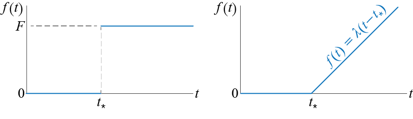
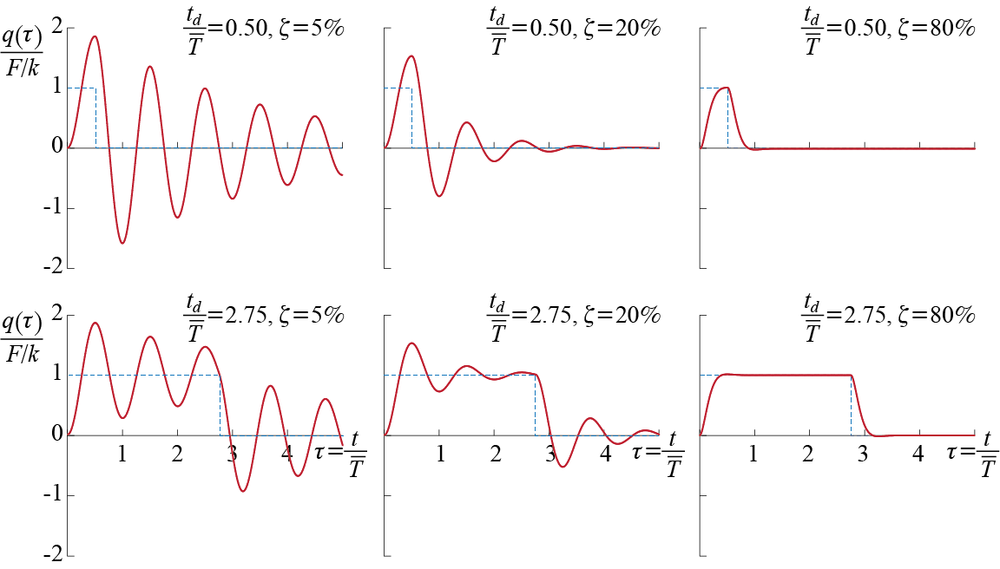

3 Forced Vibrations of Single Degree of Freedom Systems
While investigation of free vibrations is a necessary starting point in discussions, critical performance issues are encountered almost always during forced vibrations while the system is acted upon by external load effects, either in the form of external forces or support motions such as those occurring during earthquakes. We’ll see that, while only the excitation amplitudes matter in static analyses, how the excitation varies with time and in relation to the time constants of the system matters as much, if not even more, in dynamic analyses. So let us begin by introducing some typical excitation patterns that are frequently encountered, hoping to lay the groundwork for the tools we will have to introduce for solution of various problems.
A static force is essentially a force of constant magnitude and direction. In principle, it is impossible to apply any load instantaneously, but when the duration it takes for the load to reach its peak value is much smaller in comparison with the period of the system, it may be feasible to model the load as what is called a step function, an example of which is sketched in Figure 3.1 (a). In this model the load is assumed to be applied instantaneously and it is relatively simple to handle analytically. The response of a damped SDOF system will eventually settle to the response one would obtain by static analysis, given by the ratio of the amplitude of applied force to the stiffness of the system. A larger peak response may however occur before this steady value is attained, which may be an important issue in certain applications.
On the other end of the spectrum is a force of very small duration relative to the period of the system, an example of which is sketched in Figure 3.1 (b). If the force duration is very small compared to the reaction time of the system, the effect is similar to imposing some initial velocity to the system. Such forces are called impulsive; as the force duration decreases to what one would call to be instantaneous, the force is mathematically modeled as an impulse. It is possible to obtain an analytical solution to the response of an SDOF system to an impulse and, moreover, this solution may be used to construct the response of a system to some arbitrary excitation.
Dynamic effects start to be more pronounced when one considers a harmonic excitation like the one shown in Figure 3.1 (c). When the duration of the force is long relative to the period of the system, the system will eventually start to oscillate with the frequency of the force during what is called the steady-state response. We will investigate this type of input in great detail since it will be shown that a very critical condition called resonance occurs when the frequency of excitation approaches that of the system. Resonance is critical because the maximum response of the system under resonance may reach multiple times of the static response it would show under the same amplitude of force, with the amplification factor being some function of damping. As this phenomenon is the cause of many failures in real life, understanding it is of paramount importance.
It may be that the force is not just a single harmonic wave but it comprises repetitions of some particular pattern as is the case shown in Figure 3.1 (d). When the duration of the force is long compared with the period of the system, such a repetitive force is called periodic. Under a periodic force the response will also eventually reach a repetitive cycle called the steady-state response; in that case the analysis may be conducted by modeling the periodic force as the superposition of a number of harmonics, and calculating the response as the superposition of the response to each harmonic, using the tools developed for the analysis under a single harmonic force. Periodic forces are important because the presence of multiple harmonics may lead to various risks regarding resonance.
Most often, however, we will have to deal with forces that are somewhat arbitrary in that their time variation can not be characterized analytically, as sketched in Figure 3.1 (e). In such cases, if the values of the excitation are known at points in time, the response may be evaluated via numerical techniques. We will introduce some numerical techniques that may be used in a wide variety of systems. Earthquake response calculations are generally based on such numerical methods since ground motions, which act as inputs to structures, are of such arbitrary nature, as numerous recordings of earthquake induced ground vibrations have shown.
In some cases it may not be possible to even measure the input. Some of such forces, an example of which is sketched in Figure 3.1 (f), may be modeled using tools and techniques from analysis of random processes, and the response of a system subject to such inputs is generally referred to as random vibrations. Random vibrations are generally analyzed in the frequency domain since random inputs are more easily characterized in that domain though their spectra. Although random vibrations are important in some applications, our focus in this chapter will be introducing basic analysis tools and understanding of forced vibrations.
3.1 General Methodology
To develop the general method for developing analytical solutions to forced vibrations, let us once again consider the prototypical SDOF model, shown for ease of reference again in Figure 3.2. The equation of motion for the system, obtained by summing the forces shown in the free body diagram and considering initial conditions, is given by \[ m \ddgct + c \dgct + k \gct = \extforce(t) \, ; \quad \left\{\gc(0) = \gcic, \dgc(0) = \dgcic\right\} \qquad(3.1)\]

Studies in differential equations tell us that the solution to Equation 3.1 may be constructed via two components as \[ \gct = \gc_{c} (t) + \gc_{p}(t) \] where \(\gc_{c}(t)\) is referred to as the complementary solution, given by the solution to the homogeneous equation so that \[ m \ddgc_{c}(t) + c \dgc_{c}(t) + k \gc_{c}(t) = 0 \] and \(\gc_{p}(t)\) is referred to as the particular solution satisfying \[ m \ddgc_{p}(t) + c \dgc_{p}(t) + k \gc_{p}(t) = \extforce (t) \] The particular solution will depend on the forcing function and so it must be determined anew for each different type of force, whereas the complementary solution for an underdamped system will always be given by some form of \[ \gct = \expon{-\damp \freq t}\left(C_1 \cos \dfreq t + C_2 \sin \dfreq t \right) \qquad(3.2)\] where \(C_1\) and \(C_2\) are two coefficients to be determined. The existence of these two coefficients is what allows us to solve the problem since that freedom is needed to incorporate the contribution of initial conditions, something that the particular solution alone cannot do. That the superposition of the complementary and the particular solutions still satisfy the force equilibrium equation is trivial due to the linearity of the differential equation since \[\begin{align*} m \left[\ddgc_{c} + \ddgc_{p}\right] & + c \left[\dgc_{c} + \dgc_{p} \right] + k \left[\gc_{c} + \gc_{p} \right] \\ & = \left[m \ddgc_{c} + c \dgc_{c} + k \gc_{c} \right] + \left[m \ddgc_{p} + c \dgc_{p} + k \gc_{p} \right] \\ & = [0] + \left[m \ddgc_{p} + c \dgc_{p} + k \gc_{p} \right] = \extforce(t) \end{align*}\]
The linearity of the governing equation has even more significant consequences which has proven extremely useful in analysis: since superposition holds, the simultaneous action of a number of disturbances may be analyzed by evaluating the response of the system to each individual disturbance separately, and then superpose all the solutions thus obtained to evaluate the cumulative response; the principle is schematically explained in Figure 3.3. To express this statement symbolically, if \(\gc^{(1)}\) is the response of the system to some input \(\text{inp}^{(1)}\) and if \(\gc^{(2)}\) is its response to some input \(\text{inp}^{(2)}\), then the response of the system will be given by \(\gc^{(1)} + \gc^{(1)}\) when the system is acted upon by both inputs simultaneously, i.e. by \(\text{inp}^{(1)} + \text{inp}^{(2)}\). If the inputs are amplified so that the system is acted upon by \(a_1 \text{inp}^{(1)} + a_2 \text{inp}^{(2)}\), then the responses to individual inputs will likewise be amplified so that the system response will be given by \(a_1 \gc^{(1)} + a_2 \gc^{(1)}\). Note that we have used the more generic term input to denote the effect that sets the system in motion for it can refer to a set of initial conditions and/or external forces and/or base motion; all of these may be investigated separately and the results thus obtained may then be combined to calculate the response that would occur under the combined action of all. We may therefore finally state the following: Let \(\gc^{(1)}\) be the solution to the initial condition problem \[ m \ddgc^{(1)} (t) + c \dgc^{(1)} (t) + k \gc^{(1)} (t) = 0 \, ; \quad \left\{\gc^{(1)}(0) = \gcic, \dgc^{(1)} (0) = \dgcic \right\} \qquad(3.3)\] so that it is given for a viscously underdamped system by \[ \gc^{(1)}(t) = \expon{-\damp \freq t}\left(\gcic \cos \dfreq t + \frac{\dgcic + \damp \freq \gcic}{\dfreq} \sin \dfreq t \right) \]
as we had shown while discussing free vibrations. If the same system were subjected only to some external force with zero initial conditions, the response \(\gc^{(2)}(t)\) would have to satisfy1 \[ m \ddgc^{(2)} (t) + c \dgc^{(2)} (t) + k \gc^{(2)} (t) = \extforce (t) \, ; \quad \left\{\gc^{(2)} (0) = 0, \dgc^{(2)} (0) = 0 \right\} \qquad(3.4)\] When the system is subjected to both the external excitation \(\extforce(t)\) and the nonzero initial conditions \(\gc(0) = \gcic, \dgc(0) = \dgcic\), the response \(\gct\) would have to satisfy \[ m \ddgct + c \dgct + k \gct = \extforce(t) \, ; \quad \left\{\gc(0) = \gcic, \dgc(0) = \dgcic\right\} \qquad(3.5)\] and the linearity of the system allows superposition so that \(\gct\) is simply given by \[ \gc (t) = \gc^{(2)} (t) + \gc^{(2)} (t) = \expon{-\damp \freq t}\left(\gcic \cos \dfreq t + \frac{\dgcic + \damp \freq \gcic}{\dfreq} \sin \dfreq t \right) + \gc^{(2)} (t) \qquad(3.6)\] This result will allow us to investigate all forced vibration problems with zero initial conditions as the additional contribution of any nonzero initial condition may simply be superposed afterwards.
3.1.1 Constant Force: Step Input
Let us start with the case of a constant force shown in Figure 3.4, defined mathematically as \[ \extforce (t) = \begin{cases} \sforce & t \geq 0 \\ 0 & t < 0 \end{cases} \]
For \(t \geq 0\), the underdamped system is governed by \[ m \ddgct + c \dgct + k \gct = \sforce \, ; \quad \left\{\gc(0) = 0, \dgc(0) = 0\right\} \qquad(3.7)\] and the complementary solution is given by \[ \gc_{c} (t) = \expon{-\damp \freq t}\left(C_1 \cos \dfreq t + C_2 \sin \freq t \right) \qquad(3.8)\] We have to find the particular solution before evaluating the unknown coefficients since the initial conditions are to be imposed on the actual response, not just the complementary part. As the forcing function is a constant, we may initially try a constant particular solution of the form \[ \gc_{p} (t) = C \qquad(3.9)\] Substituting the trial solution of Equation 3.9 into the equation of motion in Equation 3.7 leads to2 \[ 0 + 0 + k C = \sforce \] so that we conclude the particular solution to be of the trial form with \[ C = \frac{\sforce}{k} \] which, it should be noted, is equal the static displacement \[ \Delta_{st}=\frac{\sforce}{k} \] if this were a static problem. Now the solution becomes \[ \gct = \expon{-\damp \freq t}\left(C_1 \cos \dfreq t + C_2 \sin \dfreq t \right) + \frac{\sforce}{k} \qquad(3.10)\] and applying the initial conditions lead to \[\begin{align*} \gc (0) = C_1 + \frac{\sforce}{k} = & 0 \quad \rightarrow \quad C_1 = - \frac{\sforce}{k} \\ \dgc (0) = - \damp \freq C_1 + \dfreq C_2 = & 0 \quad \rightarrow \quad C_2 = - \frac{\sforce}{k} \frac{\damp}{\sqrt{1-\damp^2}} \end{align*}\] so that the solution is finally obtained as \[ \gct = \frac{\sforce}{k} \left[ 1 - \expon{-\damp \freq t}\left(\cos \dfreq t + \frac{\damp}{\sqrt{1-\damp^2}} \sin \dfreq t \right) \right] \quad \text{for } t \geq 0 \qquad(3.11)\]
How the system responds to the force and the effects of damping on the response may be most easily visualized via the plots sketched in Figure 3.5. There are a few important things to be noted. First of all, in the presence of damping, the response eventually converges to the static displacement; how fast this convergence occurs depends on the amount of damping with faster rates occurring for larger damping values. Results obtained via static analyses are therefore the asymptotic values the dynamic responses eventually settle to whenever the duration of the load application is long enough. Another point worth making is that the maximum response that occurs may exceed the static response and the peak value depends again on the amount of damping. In fact, the velocity as a function of the normalized time \(\tau = t/\dperiod\) may be shown to be given by \[ \dgc (t) = \frac{\sforce}{k} \expon{- \damp \freq t}\frac{\freq}{\sqrt{1-\damp^2}} \sin \dfreq t \qquad(3.12)\]
which will take on a value of zero for \(t > 0\) whenever \(\dfreq t\) is a positive integer multiple of \(\pi\), or in other words, whenever \[ t = \ratio{i \pi}{\dfreq} = i \ratio{\dperiod}{2} \quad \text{for } i=1,2,\ldots \] which corresponds to \[ \tau = \ratio{t}{\dperiod} = \ratio{1}{2} i \quad \text{for } i=1,2,\ldots \] i.e. whenever \(\tau\) is a positive integer multiple of \(1/2\). Therefore, the first peak is reached, if at all, when \(\tau = 1/2\), i.e. halfway through the first cycle when \(t = \dperiod / 2\), and the value of the peak displacement is given by \[ \gc_{max} = \Delta_{st}\left[1+\expon{-\pi \damp / \sqrt{1-\damp^2}}\right] \] so that for an undamped system we have \[ \frac{\gc_{max}}{\Delta_{st}}= 2 \] and for damping values of \(\zeta=5\%\), \(\zeta=20\%\) and \(\zeta=50\%\) the amplification above will be calculated as \(1.85\), \(1.53\) and \(1.16\), respectively.
3.2 Linearly Increasing Force: Ramp Input
Consider a linearly increasing external force as shown in Figure 3.4. This force, having a rate of increase of \(1\) (unit of force/unit of time), is defined mathematically as \[ \extforce (t) = \begin{cases} t & t \geq 0 \\ 0 & t < 0 \end{cases} \] so that for \(t \geq 0\), the underdamped system is governed by \[ m \ddgct + c \dgct + k \gct = t \, ; \quad \left\{\gc(0) = 0, \dgc(0) = 0 \right\} \qquad(3.13)\]
The complementary solution is still given by Equation 3.8. Since the right hand side of the equation is a linear function of \(t\), for the particular solution, we may try \[ \gc_p (t) = At + B \qquad(3.14)\] which leads, when substituted into the equation of motion of Equation 3.13, to \[ 0 + cA + Akt + Bk = t \] In this case, the coefficients of the left and right hand sides of the equation may be matched to conclude \[ A = \frac{1}{k}, \quad B = - \frac{c}{k^2} = - \frac{2 \damp \freq m}{k^2} = - \frac{1}{k}\frac{2 \damp}{\freq} \] so that the solution \(\gc = \gc_{c} + \gc_{p}\) is of the form \[ \gct = \expon{-\damp \freq t}\left(C_1 \cos \dfreq t + C_2 \sin \dfreq t \right) + \frac{1}{k} \left[t - \frac{2 \damp}{\freq} \right] \qquad(3.15)\] Applying the initial conditions leads to \[\begin{align*} \gc (0) = C_1 - \frac{2 \damp}{k \freq} = & 0 \quad \rightarrow \quad C_1 = \frac{2 \damp}{k \freq} \\ \dgc (0) = - \damp \freq C_1 + \dfreq C_2 + \frac{1}{k}= & 0 \quad \rightarrow \quad C_2 = \frac{2 \damp^2 - 1}{k\dfreq} \end{align*}\] with the final solution now given for \(t \geq 0\) by \[ \gct = \frac{1}{k\freq} \left[\expon{-\damp \freq t}\left(2 \damp \cos \dfreq t + \frac{2 \damp^2 - 1}{\sqrt{1-\damp^2}} \sin \dfreq t \right) + \freq t - 2 \damp \right] \qquad(3.16)\]
Having determined the solution for a unit rate, we may easily extend this solution to the case when the rate of increase of the force is not unity but some \(\lambda\) so that the force is defined as \[ \extforce (t) = \begin{cases} \lambda t & t \geq 0 \\ 0 & t < 0 \end{cases} \] and the system is governed by \[ m \ddgct + c \dgct + k \gct = \lambda t \, ; \quad \left\{\gc(0) = 0, \dgc(0) = 0\right\} \qquad(3.17)\] Due to the linearity of the system, the principle of superposition summarized in Figure 3.3 allows us to conclude that when the input is scaled by some value \(\lambda\), the output will also have to be scaled by the same value so that the response will simply be given for \(t \geq 0\) by \[ \gct = \frac{\lambda}{k \freq} \left[\expon{-\damp \freq t}\left(2 \damp \cos \dfreq t + \frac{2 \damp^2 - 1}{\sqrt{1-\damp^2}} \sin \dfreq t \right) + \freq t - 2 \damp \right] \qquad(3.18)\] which of course includes the initial problem as a special case with \(\lambda = 1\). If the system is undamped, then using \(\damp = 0\) in Equation 3.18 leads to \[ \gct = \frac{\lambda}{k\freq} \left[ \freq t - \sin \freq t \right] \quad \text{for } t\geq 0 \qquad(3.19)\]
A graphical comparison of the variation of response with damping in this case is not as straightforward as it was in the response to a step function. To help discuss general trends, Figure 3.7 presents the responses that would be observed for a particular system for various values of the damping ratio. The normalized time used in these plots is \(\tau = t / \period\) which differs from that used for previous investigations in that here we use the undamped period as opposed to the damped one. To help facilitate a visual reference, the plots also include what may be referred to as instantaneous static response \(\extforce (\tau) / k\). The tendency of the response is to converge to some percentage of the instantaneous static response. Since \(\freq t = 2 \pi \tau\), for an undamped system we have \[ \frac{\extforce(\tau)}{k} - \gc (\tau) = \frac{\lambda}{\freq k} 2 \pi \tau - \frac{\lambda}{\freq k} \left[ 2 \pi \tau - \sin 2 \pi \tau \right] = \frac{\lambda}{\freq k}\sin 2 \pi \tau \] so that the response oscillates around the instantaneous static response. On the other hand, whenever there is damping in the system we have, from Equation 3.18, \[ \underset{\tau \rightarrow \infty}{\lim}\left[\frac{\extforce(\tau)}{k} - \gc (\tau)\right] = \frac{\lambda}{\freq k} 2 \pi \tau - \frac{\lambda}{\freq k} \left[ 2 \pi \tau - 2 \damp\right] = 2 \damp \frac{\lambda}{\freq k} \] so that eventually the transient vibrations die out and the steady state response tracks the force with a certain lag that depends on the damping ratio for a given system and force.
3.2.1 Input Shifted in Time
Consider what the response would be if the step and the ramp forces of the discussions above were applied not at time \(t=0\) but they started to act at some time \(t=\tshift\) as shown in Figure 3.8.
Since the coefficients in the differential equation are time invariant, or in other words since the mass, damping and stiffness properties of the system remain unaltered as time progresses, the solution to these problems is relatively straightforward. Let us take the step input to begin with. The problem statement for zero initial conditions is given by \[ m \ddgct + c \dgct + k \gct = \sforce \, ; \quad \left\{\gc(\tshift) = 0, \dgc(\tshift) = 0\right\} \quad \text{for } t \geq \tshift \] If we define a new time variable \(\tau = t - \tshift\), then \[ \frac{\diff q}{\diff \tau} = \frac{\diff q}{\diff t} \frac{\diff t}{\diff \tau} = \frac{\diff q}{\diff t}, \quad \frac{\diff^2 q}{\diff \tau^2} = \frac{\diff^2 q}{\diff t^2} \] so that the problem may be stated in terms of this new time variable as \[ m \ddgc (\tau) + c \dgc (\tau) + k \gc (\tau) = \sforce \, ; \quad \left\{\gc(0) = 0, \dgc(0) = 0\right\} \quad \text{for } \tau \geq 0 \] Note that this is exactly the same problem as that in Equation 3.7, with \(\tau\) replacing \(t\). The solution may therefore immediately be written following Equation 3.11 \[%\begin{xequation}\label{eq:xsolstepshift} \gc (\tau) = \frac{\sforce}{k} \left[ 1 - \expon{-\damp \freq \tau}\left(\cos \dfreq \tau + \frac{\damp}{\sqrt{1-\damp^2}} \sin \dfreq \tau \right) \right] \quad \text{for } \tau \geq 0 \] and substituting \(\tau = t - \tshift\) leads to \[%\begin{xequation}\label{eq:xsolstepshift2} \gct = \frac{\sforce}{k} \left[ 1 - \expon{-\damp \freq (t-\tshift)}\left(\cos \dfreq (t-\tshift) + \frac{\damp}{\sqrt{1-\damp^2}} \sin \dfreq (t-\tshift) \right) \right] \quad \text{for } t \geq \tshift \]

As the methodology described above is general, the conclusion is obvious: since the coefficients of the linear equation of motion are time invariant, a time shift in input results simply results in a shift in the output. If, for example, the initial conditions for the system were nonzero at time \(t=\tshift\) so that the system were to be governed by \[ m \ddgct + c \dgct + k \gct = \sforce \, ; \quad \left\{\gc(\tshift) = \gc_{*}, \dgc(\tshift) = \dgc_{*}\right\} \quad \text{for } t \geq \tshift \] then, based on equations Equation 3.6 and Equation 3.11 wherein we replace \(t\) by \(t-\tshift\), and \(\gcic\) and \(\dgcic\) by \(\gc_{*}\) and \(\dgc_{*}\), respectively, the response would be given by: \[\begin{align*} \gc (t) & = \expon{-\damp \freq (t-\tshift)}\left[\gc_{*} \cos \dfreq (t-\tshift) + \frac{\dgc_{*} + \damp \freq \gc_{*} }{\dfreq} \sin \dfreq (t-\tshift) \right] + \\ & \; \frac{\sforce}{k} \left[ 1 - \expon{-\damp \freq (t-\tshift)}\left(\cos \dfreq (t-\tshift) + \frac{\damp}{\sqrt{1-\damp^2}} \sin \dfreq (t-\tshift) \right) \right] \quad \text{for } t \geq \tshift \end{align*}\]
Similarly, if an underdamped SDOF system, initially at rest, is subjected to the ramp function shown in Figure 3.8 so that it is governed by \[ m \ddgct + c \dgct + k \gct = \lambda (t-\tshift) \, ; \quad \left\{\gc(\tshift) = 0, \dgc(\tshift) = 0\right\} \quad \text{for } t \geq \tshift \] then its response is obtained simply by shifting the solution in Equation 3.18 as: \[ \gct = \frac{\lambda}{k \freq} \left[\expon{-\damp \freq (t-\tshift)}\left(2 \damp \cos \dfreq (t-\tshift) + \frac{2 \damp^2 - 1}{\sqrt{1-\damp^2}} \sin \dfreq (t-\tshift) \right) + \freq (t-\tshift) - 2 \damp \right] \]
3.2.2 Constant Load Applied in Finite Time
To model the fact that it is not physically possible to instantaneously apply a load, let us consider a forcing function which starts from 0 and increases linearly to some value \(\sforce\) in duration \(t_{r}\), called rising time, after which it remains at the constant value of \(\sforce\). Such a loading, shown in Figure 3.9, is described mathematically by \[ \extforce (t) = \begin{cases} \sforce {\ratio{t}{t_{r}}} & 0 \leq t < t_{r} \\ F & t \geq t_{r} \end{cases} \]
There is more than one way to approach this problem, as will probably be the case in many of the problems that will be considered throughout this work. One approach is to make use of the results previously derived and construct a solution via superposition. Assume the system is underdamped and initially (at time \(t=0\)) at rest. The system is governed by two different equations, one corresponding to each force segment, as follows: \[\begin{align*} m \ddgct + c \dgct + k \gct & = \sforce {\ratio{t}{t_{r}}} \, ; \quad \left\{\gc(0) = 0, \dgc(0) = 0\right\} \quad \text{for } 0 \leq t < t_{r} \\ m \ddgct + c \dgct + k \gct & = \sforce \, ; \quad \left\{\gc(t_{r}) = \gc_{*}, \dgc(t_{r}) = \dgc_{*} \right\} \quad \text{for } t \geq t_{r} \end{align*}\] The solution to the first part for \(0 \leq t < t_{r}\) is simple in that it is given by Equation 3.18 with \(\lambda = \sforce / t_{r}\): \[ \gct = \frac{\sforce}{k \freq t_{r}} \left[\expon{-\damp \freq t}\left(2 \damp \cos \dfreq t + \frac{2 \damp^2 - 1}{\sqrt{1-\damp^2}} \sin \dfreq t \right) + \freq t - 2 \damp \right] \qquad(3.20)\] The second part is essentially a problem we have investigated in Section 3.2.1, with a shifted step input and non-zero initial conditions with \(t_{r}=\tshift\). The solution was shown to be given for \(t \geq t_{r}\) by \[\begin{align*} \gc (t) & = \expon{-\damp \freq (t-t_{r})}\left[\gc_{*} \cos \dfreq (t-t_{r}) + \frac{\dgc_{*} + \damp \freq \gc_{*} }{\dfreq} \sin \dfreq (t-t_{r}) \right] + \\ & \; \frac{\sforce}{k} \left[ 1 - \expon{-\damp \freq (t-t_{r})}\left(\cos \dfreq (t-t_{r}) + \frac{\damp}{\sqrt{1-\damp^2}} \sin \dfreq (t-t_{r}) \right) \right] \end{align*}\] wherein the initial conditions \(\gc_{*}\) and \(\dgc_{*}\) will have to be determined as the values from the last instant governed by the solution to the first part. Substituting \(t=t_{r}\) in Equation 3.20 yields \[%\begin{xequation}\label{eq:solforcerampstep1} \gc_{*} \equiv \gc ({t_{r}}) = \frac{\sforce}{k \freq t_{r}} \left[\expon{-\damp \freq t_{r}}\left(2 \damp \cos \dfreq t_{r} + \frac{2 \damp^2 - 1}{\sqrt{1-\damp^2}} \sin \dfreq t_{r} \right) + \freq t_{r} - 2 \damp \right] \] The time derivative of \(\gc\) may be obtained from Equation 3.20 as \[ \dgct = \frac{\sforce}{k t_{r}} \left[1 - \expon{-\damp \freq t}\left(\cos \dfreq t + \frac{\damp}{\sqrt{1-\damp^2}} \sin \dfreq t \right) \right] \qquad(3.21)\] so that \[ \dgc_{*}\equiv \dgc ({t_{r}})=\frac{\sforce}{k t_{r}} \left[1 - \expon{-\damp \freq t_{r}}\left(\cos \dfreq t_{r} + \frac{\damp}{\sqrt{1-\damp^2}} \sin \dfreq t_{r} \right)\right] \] Although we have obtained the full solution, the presence of damping somewhat makes the algebra complicated and the presentation symbolically overloaded; let us therefore first simplify the results by considering the undamped case with \(\damp = 0\). When there is no damping, the solution reduces to \[ \gct = \begin{cases}\ratio{F}{k}\frac{1}{\freq t_{r}}\left[\freq t - \sin \freq t \right] \; \text{for } 0 \leq t < t_{r} \\ % \vspace{-1em} \\ \gc_{*} \cos \freq (t-t_{r}) + \ratio{\dgc_{*}}{\freq} \sin \freq (t-t_{r}) + \frac{F}{k}\left[ 1 - \cos \freq (t-t_{r}) \right] \; \text{for } t \geq t_{r} \end{cases} \] The initial conditions for the second part will be given by \[ \gc_{*}= \ratio{\sforce}{k \freq t_{r}} \left[\freq t_{r} - \sin \freq t_{r}\right], \quad \dgc_{*}=\ratio{\sforce}{k t_{r}} \left[1 - \cos \freq t_{r} \right] \qquad(3.22)\] and substituting these into the solution leads, after some algebra and trigonometric combinations, to \[ \gct = \begin{cases} {\ratio{\sforce/k}{\freq t_{r}}}\left[\freq t - \sin \freq t \right] & \text{for } 0 \leq t < t_{r} \\ % \vspace{-1em}\\ {\ratio{\sforce/k}{\freq t_{r}}} \left[ \freq t_{r} - \sin \freq t + \sin \freq (t-t_{r}) \right] & \text{for } t \geq t_{r} \end{cases} \qquad(3.23)\] The response is very sensitive to the value of the rise time \(t_{r}\) in relation to the system’s period \(\period\) as signified by the ratio \(t_{r}/T\). Some trends may be observed better by writing the solution in terms of a normalized time \(\tau = t / \period\) and replacing \(\freq\) with \(2 \pi / \period\) so that \[ \ratio{\gc (\tau)}{\sforce/k} = \begin{cases} {\ratio{\tau}{ (t_{r}/\period)}}- {\ratio{\sin 2 \pi \tau}{2 \pi (t_{r}/\period)}} & \text{for } 0 \leq \tau < (t_{r}/\period) \\ % \vspace{-1em} \\ 1 - {\ratio{\sin 2 \pi \tau - \sin 2 \pi (\tau-(t_{r}/\period))}{2\pi(t_{r}/\period)}} & \text{for } \tau \geq (t_{r}/\period) \end{cases} \qquad(3.24)\] A somewhat interesting result is observed when it is noted that whenever \((t_{r}/\period)\) is some integer, \(\sin 2 \pi \tau - \sin 2 \pi (\tau-(t_{r}/\period)) = 0\) since the sine of an angle is the same as the sine of the same angle plus any integer multiple of \(2\pi\). In such cases, the response after the rise time becomes equal to \(\sforce/k\) and no oscillations occur. Incidentally this corresponds to those cases in which the velocity of the system at the end of the ramp loading is zero. For non-integer values of \((t_{r}/\period)\), the behavior is determined by the magnitude of the ratio: if \((t_{r}/\period) \gg 1\) (load is applied very slowly relative to the period of the system), the maximum response is close to \(\sforce/k\), which again could be considered as the static response of the system. At the other end, if \((t_{r}/\period) \ll 1\) (load is applied very quickly compared to the period of the system), the maximum response is close to \(2 (\sforce/k)\); recall that in the limiting case of an instantaneously applied step load we had previously shown the maximum response to be \(2 (\sforce/k)\)3. The variation of the ratio \(q(\tau)/(\sforce/k)\) with the relative rise time \((t_{r}/\period)\) is examplified for various cases in Figure 3.10.
As \((t_{r}/\period) \rightarrow 0\), Equation 3.24 may be shown to converge to \(1 - \cos 2 \pi \tau\), which is the same result as that obtained for the step input applied instantaneously.↩︎
3.3 Harmonic Force Excitations
We have already seen that the nature of vibrations occurring in an SDOF system depend significantly on the time variation of the input relative to the period of the system. This dependence may lead to catastrophic outcomes in the case of repeated loads under which the amplifications in the response may become excessively large so as to induce failure. The most significant parameter in the response to repeated loads turns out to be the ratio of the frequency of excitation to the frequency of the system. Therefore we start the discussions of this phenomenon with the analysis of response to a single frequency input in order identify critical issues. The results developed for this case may then be used to investigate the responses to a broader set of repeated loads with the help of a well-known expansion that has been used in many branches of engineering sciences.
A harmonic excitation is essentially a single frequency sinusoidal wave. A harmonic force may be expressed as \[ \extforce (t) = \sforce \sinp{\extfreq t - \extphs} \qquad(3.25)\] where \(\sforce\) is the amplitude, \(\extfreq\) is the excitation frequency, and \(\extphs\) is the phase angle of the force. When analyzing long term behavior the phase generally does not have a significant bearing on design critical issues so that most often it is neglected (i.e. \(\extphs\) is assumed to be \(0\)); we will however consider the possibility of a nonzero phase to promote a general discussion.
We will assume that such a force acts on our system for a long duration4, long enough so that the transient vibrations have died out completely and the system is in what is called to be steady state. Recall that the forced vibration response of a viscously underdamped system is given by \[ \gct = \gc_{c} (t) + \gc_{p}(t) = \expon{-\damp \freq t}\left(C_1 \cos \dfreq t + C_2 \sin \dfreq t \right) + \gc_{p}(t) \] so that as \(t\) progresses, the exponential term tends to die out; hence the name transient vibrations. As the transient vibrations die out, the response is defined more and more solely by the particular solution, and this state of things is referred to as steady state vibrations. Since a harmonic excitation by assumption acts for a long duration, we shall initially neglect the transients and focus solely on the steady state. This does not mean that the critical response is observed always during steady state vibrations; it may be that for some cases the maximum deformation in the system occurs before the transients die out. It turns out, however, that the worst of the worst occurs for particular ranges of the excitation frequency and in those cases the transients play an insignificant role.
3.3.1 Dynamic Amplification
The steady state vibrations under the action of a harmonic force are governed by \[ m \ddgct + c \dgct + k \gct = \sforce \sinp{\extfreq t - \extphs} \qquad(3.26)\] or equivalently, after dividing through by \(m\), \[ \ddgct + 2 \damp \freq \dgct + \freq^2 \gct = \frac{\sforce}{m} \sinp{\extfreq t - \extphs} \qquad(3.27)\] where it should be mentioned that no initial condition information is provided simply because the effects of initial conditions are irrelevant for steady state vibrations. When the forcing function is harmonic the response may be expected to be harmonic as well since, at the end of the day, the left hand side of equation ought to match the right hand side at all times, and therefore appearance of sines and cosines on the left hand side should not come as a surprise. A trial solution for steady state vibrations may therefore be formulated as \[ \gct = A_1 \cosp{\extfreq t - \extphs} + A_2 \sinp{\extfreq t - \extphs} \qquad(3.28)\] which, when substituted into Equation 3.27, leads to \[\begin{align*} & \left[- \extfreq^2 A_1 + 2 \damp \freq \extfreq A_2 + \freq^2 A_1 \right ] \cosp{\extfreq t- \extphs} + \\ & \phantom{XXXXXXX} \left[- \extfreq^2 A_2 - 2 \damp \freq \extfreq A_1 + \freq^2 A_2 \right ] \sinp{\extfreq t- \extphs} = \frac{\sforce}{m} \sinp{\extfreq t - \extphs} \end{align*}\] and equating the coefficients of the sines and cosines on both sides leads to \[ \left(\freq^2 - \extfreq^2 \right) A_1 + 2 \damp \freq \extfreq A_2 = 0 \qquad(3.29)\] \[ - 2 \damp \freq \extfreq A_1 + \left(\freq^2 - \extfreq^2 \right) A_2 = \frac{\sforce}{m} \qquad(3.30)\] Solving for the coefficients \(A_i\), one obtains, \[ A_1 = \ratio{\sforce}{m} \ratio{\left(- 2 \damp \freq \extfreq \right)}{\left( \freq^2 - \extfreq^2 \right)^2 + \left(2 \damp \freq \extfreq \right)^2}, \quad A_2 = \ratio{\sforce}{m} \ratio{\left( \freq^2 - \extfreq^2 \right)}{\left(\freq^2 - \extfreq^2 \right)^2 + \left(2 \damp \freq \extfreq \right)^2} \] and after dividing the nominators and denominators by \(\freq^4\) we get \[ A_1 = \ratio{\sforce}{k} \ratio{ - 2 \damp \ratfreq }{\left( 1 - \ratfreq^2 \right)^2 + \left(2 \damp \ratfreq \right)^2}, \quad A_2 = \ratio{\sforce}{k} \ratio{ 1 - \ratfreq^2}{\left(1 - \ratfreq^2 \right)^2 + \left(2 \damp \ratfreq \right)^2} \] where \(\ratfreq\) is the ratio of the excitation frequency to the frequency of the system, i.e. \[ \ratfreq = \ratio{\extfreq}{\freq} \] Since the response is given by \[ \gct = A_1 \cosp{\extfreq t - \extphs} + A_2 \sinp{\extfreq t - \extphs} \] these two harmonics may, via the expansion \(\sinp{a-b} = \sin a \cos b - \cos a \sin b\), be combined into a single wave, as was done on numerous previous instances, to obtain \[ \begin{array}{rcl} \gct & \!\!\! = & \!\!\! Q \sinp{\extfreq t - \extphs - \phs} = Q\left[\sinp{\extfreq t - \extphs}\cos{\phs} - \cosp{\extfreq t - \extphs}\sin{\phs}\right] \\ & \!\!\! = & \!\!\! (-Q \sin \phs) \cosp{\extfreq t - \extphs} + (Q \cos \phs ) \sinp{\extfreq t - \extphs} \end{array} \qquad(3.31)\] so that we have \(A_1 = - Q \sin \phs\) and \(A_2 = Q \cos \phs\), leading to: \[ Q = \sqrt{A_1^2 + A_2^2}, \quad \tan \phs = \ratio{-A_1/Q}{A_2/Q} \] The amplitude \(Q\) of the response is therefore given by \[ Q = \sqrt{A_1^2 + A_2^2} = \ratio{\sforce}{k}\ratio{1}{\sqrt{\left(1 - \ratfreq^2 \right)^2 + \left(2 \damp \ratfreq \right)^2}} = \ratio{\sforce}{k} \dynampr \qquad(3.32)\] where \(F/k\) would be the response that would be observed if the force of amplitude \(\sforce\) were to be applied statically, and \[ \dynamp = \dynampr = \ratio{1}{\sqrt{\left(1 - \ratfreq^2 \right)^2 + \left(2 \damp \ratfreq \right)^2}} = \ratio{Q}{F/k} \qquad(3.33)\] is called the dynamic amplification factor.5 With this definition, the phase angle \(\phs\) may now be shown to be defined through \[ \tan \phs = \ratio{ ({2 \damp \ratfreq})/{\dynamp}}{({1-\ratfreq^2})/{\dynamp}} \qquad(3.34)\] and it is implied by definition that \(0 \leq \phs \leq \pi\).
The dynamic amplification factor is a measure of increase in maximum response due to the harmonic application of the force, depending on ratio of the frequencies and available damping. How this amplification factor varies as a function of the ratio of frequencies is naturally of greatest importance, and this variation is shown graphically in Figure 3.11, along with variations of the phase angle, for various levels of viscous damping. A few characteristics of these curves deserve special mention:
For all levels of damping, \(\dynamp \rightarrow 1\) as \(\ratfreq \rightarrow 0\). This is mathematically obvious as the limit of the expression in Equation 3.33, and it may physically be interpreted in a few different ways:
- For a given excitation with some finite, non-zero excitation frequency \(\extfreq\), \(\ratfreq \rightarrow 0\) implies \(\freq \rightarrow \infty\), which in turn requires \(m \rightarrow 0\) for a system with finite stiffness. If so, then the inertial forces would be very small compared to the deformational forces so that \(m \ddgct\) could be neglected in comparison with \(k \gct\) and the governing differential equation would effectively simplify to \(k \gct = \sforce \sinp{\extfreq t - \extphs}\) with the response given by \[ \gct = \ratio{\sforce}{k} \sinp{\extfreq t - \extphs} \] and the system would deform in phase with the force (\(\phs \rightarrow 0\)). A massless spring represents a limiting case as the spring simply deforms in phase with the force (\(\phs = 0\)), with the maximum deformation be given by \(Q = \sforce / k\).
- For a given excitation with some finite, non-zero excitation frequency \(\extfreq\), \(\ratfreq \rightarrow 0\) implies \(\freq \rightarrow \infty\), which in turn requires \(k \rightarrow \infty\) for a system with finite mass. Also in this case inertial forces could be neglected beside deformational forces so that \(m \ddgct\) could be neglected compared to \(k \gct\) and the governing differential equation would again effectively simplify to \(k \gct = \sforce \sinp{\extfreq t - \extphs}\). The ratio of maximum deformation to \(\sforce / k\) is again given by \(Q / (\sforce / k) = 1\), no matter how small \(Q\) and \(F / k\) are due to the very high value of \(k\).
- For a given system with some finite, non-zero frequency \(\extfreq\), \(\ratfreq \rightarrow 0\) implies \(\extfreq \rightarrow 0\), which would mean that the force is applied ever so slowly and no significant accelerations develop, again allowing us to neglect \(m \ddgct\) compared to \(k \gct\), with the governing differential equation simplifying once again to \(k \gct = \sforce \sinp{\extfreq t - \extphs}\), and the previous conclusion follow.
For all levels of damping, \(\dynamp \rightarrow 0\) as \(\ratfreq \rightarrow \infty\). This result is also obvious mathematically as the limit of the expression in Equation 3.33, and the physical system may correspond to one of the following:
- For a given excitation with some finite, non-zero excitation frequency \(\extfreq\), \(\ratfreq \rightarrow \infty\) implies \(\freq \rightarrow 0\), which in turn requires \(m \rightarrow \infty\) for a system with finite stiffness. If so, then the inertial forces would be very large compared to the deformational forces so that \(k \gct\) could be neglected in comparison with \(m \ddgct\) and the governing differential equation would effectively simplify to \(m \ddgct = \sforce \sinp{\extfreq t - \extphs}\), the integration of which leads to: \[ \gct = - \ratio{\sforce}{m\extfreq^2} \sinp{\extfreq t - \extphs} \] The minus sign implies that the response is out of phase with the force (\(\phs \rightarrow \pi\)) so that whenever the force reaches a maximum, the displacement reaches a minimum and vice versa. Clearly the maximum deformation tends to zero as \(m\) gets larger; in the limit, the inertia of the system is so great that no force can get it to start moving.
- For a given excitation with some finite, non-zero excitation frequency \(\extfreq\), \(\ratfreq \rightarrow \infty\) implies \(\freq \rightarrow 0\), which in turn requires \(k \rightarrow 0\) for a system with finite mass. Also in this case deformational forces could be neglected beside inertial forces so that \(k \gct\) could be neglected compared to \(m \ddgct\) and the governing differential equation would again effectively simplify to \(m \ddgct = \sforce \sinp{\extfreq t - \extphs}\), leading to the same conclusions as in (ii.a).
- For a given system with some finite, non-zero frequency \(\freq\), \(\ratfreq \rightarrow \infty\) implies \(\extfreq \rightarrow \infty\), which would mean that the time variation of the force is extremely fast and significant accelerations develop as the mass tries to respond, again allowing us neglect \(k \gct\) compared to \(m \ddgct\). The governing differential equation would again effectively simplify to \(m \ddgct = \sforce \sinp{\extfreq t - \extphs}\) and the response would be given by \[ \gct = - \ratio{\sforce}{m\extfreq^2} \sinp{\extfreq t - \extphs} \] which would tend to zero as \(\extfreq\) gets larger and larger.
The dynamic amplification factor reaches a peak value somewhere in the vicinity of \(\ratfreq = 1\) when damping levels are low. We can investigate the derivative of the dynamic amplification factor with respect to \(\ratfreq\) to locate the extremum points: \(\diff \dynamp / \diff \ratfreq\) becomes zero at \(\ratfreq = 0\) and \(\ratfreq = \sqrt{1-2 \damp^2}\) for \(\damp \leq 1/\sqrt{2}\), while for \(\damp > 1 / \sqrt{2}\) the derivative is zero only for \(\ratfreq = 0\). Therefore whenever \(\damp \leq 1/\sqrt{2} \approx 71\%\), the maximum value of the dynamic amplification factor is given by \[ \dynamp_{\max} = \dynamp \bigr|_{\ratfreq = \sqrt{1-2\damp^2}} = \ratio{1}{2 \damp} \ratio{1}{\sqrt{1-\damp^2}} \approx \ratio{1}{2 \damp} \qquad(3.35)\] where the last approximation is valid for small values of the damping ratio. To provide some numerical justification, for a damping ratio of \(\damp = 10 \%\), which is not so small in terms of damping ratios frequently encountered in structural dynamics, the exact value for the amplification factor is \(5.05\) whereas the approximate value is \(5.00\), with the error of approximation about \(1\%\) or, in other words, practically completely negligible.
If the damping is zero, the amplitude of the dynamic response tends to infinity as \(\ratfreq = (\extfreq / \freq) \rightarrow 1\), and this phenomenon is called \(\mem{resonance}\). This infinite response is of course purely theoretical as the system would either yield or break if the deformations were to exceed critical levels but nevertheless the possibility of such large increases, no matter how small the amplitude of the forces is and purely due to the time variation of the force, is most significant. The large peaks observed in the vicinity of \(\ratfreq = (\extfreq / \freq) = 1\) when viscous damping is present are also very significant as they may lead to excessive deformations not accounted for in design, and these will also be referred to as resonance to allude to the nature of phenomenon. Resonance leads to such significant increases in demands that it should definitely be avoided if possible, most probably by changing the design to modify the frequency of the system and making sure that it does not coincide with the possibly dominant frequencies of expected excitations.
3.3.2 Response of Undamped Systems
The curves in Figure 3.11 are very significant for design purposes as they indicate the most critical deformations that SDOF systems are likely to suffer under harmonic forces, but they do not represent the whole picture regarding the time variation of the response. Let us first investigate an undamped system’s response over time for various values of \(\ratfreq = \extfreq / \freq\), sketched in Figure 3.12. The system is initially at rest and the force is given by \(\extforce (t) = \sforce \sinp{\extfreq t - \extphs}\). Since the system is undamped, for all \(\ratfreq \neq 1\), Equation 3.32 and Equation 3.34 lead to6 \[ Q = \ratio{\sforce}{k} \dynamp = \ratio{\sforce}{k}\ratio{1}{\sqrt{(1-\ratfreq^2)^2}}, \qquad \phs = \begin{cases} \arctan{\frac{0}{1}} = 0 & \ratfreq < 1 \\ \arctan{\frac{0}{-1}} = \pi & \ratfreq > 1\end{cases} \]
Since the phase angle is either zero (for \(\ratfreq < 1\)) or \(\pi\) (for \(\ratfreq > 1\)), the particular solution may be written with the help of the expansion \(\sinp{a-b} = \sin a \cos b - \cos a \sin b\) as \[ \gc_{p} (t) = Q \cos \phs \sinp{\extfreq t - \extphs} \] so that \(\gct = \gc_{c} (t) + \gc_{p} (t)\) is given by \[ \gct = C_1 \cosp{\freq t} + C_2 \sinp{\freq t} + Q \cos \phs \sinp{\extfreq t - \extphs} \] When the system is initially at rest, evaluating \(C_i\) leads to \[ \ratio{\gct}{\sforce / k} = \dynamp \bigl[\sin \extphs \cos \phs \cos \freq t - \ratfreq \cos \extphs \cos \phs \sin \freq t + \cos \phs \sinp{\extfreq t -\extphs}\bigr] \qquad(3.36)\] so that if, for example, \(\extforce (t) = \sforce \sinp{\extfreq t}\) with \(\extphs = 0\), the response is given by \[ \ratio{\gct}{\sforce / k} = \dynamp \bigl[- \ratfreq \cos \phs \sin \freq t + \cos \phs \sin{\extfreq t}\bigr] \] whereas if \(\extforce (t) = \sforce \cosp{\extfreq t}\) with \(\extphs = -\pi/2\), the response is given by \[ \ratio{\gct}{\sforce / k} = \dynamp \bigl[- \cos \phs \cos \freq t + \cos \phs \cos{\extfreq t}\bigr] \] where, in all cases concerning undamped systems, \(\cos \phs = 1\) if \(\ratfreq < 1\), and \(\cos \phs = -1\) if \(\ratfreq > 1\). Expressing the result in Equation 3.36 in terms of normalized time \(\tau = t / (2 \pi / \extfreq)\), i.e. normalizing time with the period of the excitation frequency, we obtain \[ \ratio{\gc (\tau) }{\sforce / k} = \dynamp \bigl[\sin \extphs \cos \phs \cosp{\frac{2 \pi}{\ratfreq} \tau} - \ratfreq \cos \extphs \cos \phs \sinp{\frac{2 \pi}{\ratfreq} \tau} + \cos \phs \sinp{2 \pi \tau -\extphs}\bigr] \qquad(3.37)\] and we use Equation 3.37 to develop the response time histories shown in Figure 3.12 for \(\ratfreq = 0.1\) and \(\ratfreq = 3.0\), with \(\extphs = -\pi/2\). Note that since the system is undamped, the so-called transient solution never dies out, and in fact the maximum response may easily exceed what the particular solution, i.e. the dynamic amplification factor, alone predicts. The phase difference \(\phs\) between the input and the output is not easily identified from these plots since the response comprises not only the particular solution but also the transients.
When \(\ratfreq = 1\), i.e. when \(\extfreq = \freq\), the particular solution \(\gc_p = Q \sinp{\extfreq t - \extphs}\) may no longer be employed since when \(\extfreq = \freq\), \(\gc_P = Q \sinp{\freq t - \extphs}\) satisfies the homogeneous equation. The particular solution for this specific case is given by \[ \gc_{p} = t [B_1 \cosp{\extfreq t - \extphs} + B_2 \sinp{\extfreq t - \extphs}] = t [B_1 \cosp{\freq t - \extphs} + B_2 \sinp{\freq t - \extphs}] \] where \(B_i\) are constants yet to be determined. Substituting this proposal in the equation of motion given by \[ m \ddgc_{p} (t) + k \gc_{p} (t) = \sforce \sinp{\extfreq t - \extphs} = \sforce \sinp{\freq t - \extphs} \] and solving for \(B_i\) yields: \[ B_1 = - \ratio{\sforce}{k}\ratio{\freq}{2}, \qquad B_2 = 0 \] The total solution is given by \[ \gct = C_1 \cosp{\freq t} + C_2 \sinp{\freq t} - \ratio{\sforce}{k}\ratio{\freq}{2} t \cosp{\freq t - \extphs} \] so that with the system initially at rest, one gets \(C_1 = 0\) and \(C_2 = \sforce \cos \extphs / (2k)\), and the response is given by \[ \ratio{\gct}{{\sforce}/{k}} = \ratio{\cos{\extphs}}{2} \sin{\freq t} - \ratio{\freq}{2} t \cosp{\freq t - \extphs} \qquad(3.38)\] For the specific case of \(\extphs = -\pi/2\) and using normalized time \(\tau = t / (2 \pi / \extfreq)\), the response is given by \[ \ratio{\gc (\tau)}{{\sforce}/{k}} = \pi \tau \sinp{2 \pi \tau} \] and this final form is the one plotted in Figure 3.12. Two characteristics of the response are immediately obvious from this plot: i. The sinusoidal component is multiplied by a linearly increasing envelope so that the response amplitude continuously increases, leading to an infinitely large response as \(\tau \rightarrow \infty\), ii. the response reaches its local peaks and troughs when the force is zero, so that the phase difference between the input and output is given by \(\phs = \pi / 2\), a result that is not obvious at a first glance from Equation 3.34.
When \(\ratfreq = 1\), the particular solution used for \(\ratfreq \neq 1\) is also the complementary solution and so the particular solution needs to be modified as we will soon see.↩︎
3.3.3 Response of Damped Systems
The behavior is qualitatively different in the presence of damping as it should be expected. The particular solution is still given by Equation 3.31 but the complementary solution is given, for a viscously underdamped system, by Equation 3.2, i.e. \[ \gct=\expon{-\damp \freq t}\left(C_1 \cos \dfreq t + C_2 \sin \dfreq t \right) \] Evaluating the coefficients for a system initially at rest leads to \[ \begin{array}{rcl} \frac{\gct}{\sforce / k} & \!\!\! = & \!\!\! \dynamp \expon{-\damp \freq t} \biggl[\sinp{\extphs + \phs} \cos \dfreq t + \biggl(\frac{\damp \sinp{\extphs + \phs}-\ratfreq \cosp{\extphs + \phs}}{\sqrt{1-\damp^2}}\biggr) \sin \dfreq t \biggr] \\ & & \; + \dynamp\sinp{\extfreq t - \extphs - \phs} \end{array} \qquad(3.39)\] which may be expressed, using normalized time \(\tau = t / (2 \pi / \extfreq)\), as: \[ \begin{array}{rcl} \frac{\gc (\tau)}{\sforce / k} & \!\!\! = & \!\!\! \dynamp \expon{-2 \pi \damp \tau / \ratfreq} \biggl[ \sinp{\extphs + \phs} \cos{\frac{2 \pi \sqrt{1-\damp^2}}{\ratfreq}\tau} + \biggl(\frac{\damp \sinp{\extphs + \phs}-\ratfreq \cosp{\extphs + \phs}}{\sqrt{1-\damp^2}}\biggr) \sin{\frac{2 \pi \sqrt{1-\damp^2}}{\ratfreq}\tau} \biggr] \\ & & \; + \dynamp \sinp{2 \pi \tau - \extphs - \phs} \end{array} \qquad(3.40)\]
Let us see how the response develops in the presence of relatively small amount of linear viscous damping, plotted in Figure 3.13. These plots show the response of an SDOF system, with \(\damp = 1 \%\), during the first ten cycles of the input. When \(\ratfreq = 0.1\), the transients die out by the time about 6-7 cycles of input are completed, and the steady state response starts to completely govern, with response amplitude \(\approx F/k\) and phase \(\phs \approx 0\). Since \(\ratfreq = 0.1\), the system’s (undamped) frequency is ten times bigger than the forcing frequency, and so the system’s period is about ten times smaller than the period of the input; therefore, by the time the input completes one full cycle, the transient response completes about 10 cycles, and hence we can see the transient response decaying almost completely by the end of 6-7 cycles of input. The situation is reversed when \(\ratfreq = 3.0\), since now the system’s period is 3 times longer that the period of the input; therefore, by the time the input completes ten full cycles, the transient response completes only a bit more than 3 cycles, and hence it is still very much alive. The dominance of the steady response is therefore not obvious and the presence of two distinct frequencies is still felt at \(\tau = 10\); nevertheless, the amplitude of the response clearly indicates the decrease in the dynamic amplification factor as \(\ratfreq\) exceeds \(1\).
Obviously the most interesting case is again that of near resonance, and we see that contrary to the unbounded increase observed in the undamped case, damping leads to a response converging to some finite value when \(\ratfreq = 1\). As the transients complete about 10 cycles, the convergence is not finalized in the segment shown; in fact, for this amount of damping, the undisputed dominance of the steady state response requires about 50-60 cycles to be completed. This relatively delayed convergence is observed clearly in Figure 3.14 where the exponential decay of the response amplitude is tractable, and the response eventually converges to a steady state amplitude given by \(50 \approx 1 / (2 \damp) = 1 / 0.02\) as previously discussed while the dynamic amplification factor was investigated.
3.3.4 Beat Phenomenon
A curious phenomenon becomes predominantly evident in the response when the excitation frequency and the frequency of the system are close in an undamped system. The response of an undamped system, initially at rest, to the external force \(\extforcet = \sforce \sinp{\extfreq t + (\pi/2)} = \sforce \cosp{\extfreq t}\) was shown to be given by \[ \ratio{\gct}{\sforce / k} = \dynamp \bigl[- \cos \phs \cos \freq t + \cos \phs \cos{\extfreq t}\bigr] \] When the response comprises two harmonics, it may be written, using trigonometric identities7, as the product of two harmonic waves: one of frequency equal to the average, and the second equal to half the difference of the original two frequencies. For this particular case, it may be shown that: \[ \ratio{\gct}{\sforce / k} = \dynamp \cos \phs \bigl[- \cos \freq t + \cos{\extfreq t}\bigr] = - 2 \dynamp \cos \phs \sinp{\frac{\extfreq - \freq}{2}t}\sinp{\frac{\extfreq + \freq}{2}t} \]
This product of two sine waves is generally interpreted as one modulating wave with frequency of modulation, called the beat frequency, equal to \((\extfreq - \freq)\),8 and a second wave, of frequency equal to the average given by \((\extfreq + \freq)/2\), whose amplitude is modified in a time dependent manner by the modulating wave. The resulting pattern is shown in Figure 3.15 which shows the response for the case \(\ratfreq = \extfreq / \freq = 0.94\). If this were a sound wave, one would hear a note with a perpetually changing strength so that it would get loud and then quiet and then loud again and so on. Such a phenomenon is not very common but certainly possible in structural dynamics, with the more important considerations appearing in multi degree of freedom systems in which this beat phenomenon generally corresponds to a back-and-forth transfer of energy between different types of motion.
\(\sin(a\pm b) = \sin a \cos b \pm \cos a \sin b\), \(\cos 2a = 1 - 2 \sin^2 a = 2\cos^2 a - 1\)↩︎
The beat frequency is defined as the difference and not the half of the difference of the two frequencies, a choice based on the fact that the time between the peaks (or zeros) of modulation is given by \(2\pi/(\extfreq - \freq)\)↩︎
3.4 Pulse Response and Impulse Response Function
A subclass of inputs called pulse type inputs (or simply pulses) are useful to model excitations that are relatively of short duration. The response of an SDOF system to such inputs will be qualitatively different than those we have so far considered in that due to the short excitation duration the system will not reach steady state conditions, and most of the oscillations will be free vibrations instigated by the energy the input imparts to the system.
A pulse type loading often does not have a well-defined shape, such as the one shown in Figure 3.16(a). For analytical treatment pulses are often modeled in simpler shapes, such as the rectangular pulse of Figure 3.16(b), the half sine wave of Figure 3.16(c), and the symmetrical triangular shape of Figure 3.16(d). Analyses of these simpler shapes could be expected to give some indication of how SDOF systems respond to pulses and the effects of the pulse shape on the observed behavior.
3.4.1 Rectangular Pulse
Let us start with the rectangular pulse of Figure 3.16(b) since we have previously developed solutions to step inputs. We’ll analyze this problem twice, once by direct solution and once via superposition, to provide some exercise in possible approaches. The force is defined by \[ \extforce (t) = \begin{cases} F & 0 \leq t < t_d \\ 0 & t \geq t_d \end{cases} \qquad(3.41)\] where \(t_d\) is generally referred to as the pulse duration. Assuming the system is viscously underdamped and initially at rest, the system will be governed by \[ m \ddgct + c \dgct + k \gct = \sforce\, ; \quad \left\{\gc(0) = 0, \dgc(0) = 0\right\} \, \text{for } 0 \leq t < t_{d} \qquad(3.42)\] \[ m \ddgct + c \dgct + k \gct = 0 \, ; \quad \left\{\gc(t_{d}) = \gc_{*}, \dgc(t_{d}) = \dgc_{*} \right\} \, \text{for } t \geq t_{d} \qquad(3.43)\] We have already solved both cases: The solution to the step input of Equation 3.42 is given by Equation 3.11 and restated here for convenience, including the region of validity: \[ \gct = \frac{\sforce}{k} \left[ 1 - \expon{-\damp \freq t}\left(\cos \dfreq t + \frac{\damp}{\sqrt{1-\damp^2}} \sin \dfreq t \right) \right] \quad \text{for } 0 \leq t < t_d \qquad(3.44)\] The displacement and velocity of the of the system at \(t=t_d\) may be evaluated via Equation 3.11 and Equation 3.12 and they are given by \[ \gc_{*} \equiv \gc (t_d) = \frac{\sforce}{k} \left[ 1 - \expon{-\damp \freq t_d}\left(\cos \dfreq t_d + \frac{\damp}{\sqrt{1-\damp^2}} \sin \dfreq t_d \right) \right] \qquad(3.45)\] \[ \dgc_{*} \equiv \dgc (t_d) = \frac{\sforce}{k} \frac{\freq}{\sqrt{1-\damp^2}} \expon{-\damp \freq t_d} \sin \dfreq t_d \qquad(3.46)\] so that, based on the discussions of Section 3.2.1, the free vibration of the system for \(t\geq t_d\) in response to Equation 3.43 is given by \[ \gct = \expon{-\damp \freq (t-t_{d})}\left[\gc_{*} \cos \dfreq (t-t_{d}) + \frac{\dgc_{*} + \damp \freq \gc_{*} }{\dfreq} \sin \dfreq (t-t_{d}) \right] \qquad(3.47)\]
To gain some physical insight into how response characteristics change depending on the relative duration of the pulse, we may start by evaluating the response of an undamped SDOF system subjected to different pulses of same amplitude but varying relative duration. When the system is undamped, the expressions above may be used with \(\damp = 0\) to obtain the response, and doing so we get \[ \gct = \begin{cases} \ratio{\sforce}{k} \left[1 - \cos \freq t\right] & \text{for } 0 \leq t < t_{d}\\ % \label{eq:resprectpulseud1} \tag{a} \\ \gc_{*} \cosp{\freq (t-t_d)} + \ratio{\dgc_{*}}{\freq} \sinp{\freq (t - t_{d})} & \text{for } t \geq t_{d} % \label{eq:resprectpulseud2} \tag{b} \end{cases} \qquad(3.48)\] with \[ % \begin{equation*}\label{eq:resprectpulseud3} \gc_{*} = \frac{\sforce}{k} \left[ 1 - \cosp{\freq t_d} \right], \quad \dgc_{*} = \frac{\sforce}{k} {\freq} \sinp{\freq t_d} % \end{equation*} \qquad(3.49)\] To generalize the discussion, normalized time \(\tau = t/\period\) may be used and the relative pulse duration explicitly identified as \(t_{d} / \period\) so that the response normalized by \(\sforce/k\) is given by9 \[ \frac{\gct}{\sforce/k} = \begin{cases} \left[1 - \cosp{2 \pi \tau} \right] & \text{for } 0 \leq \tau < \ratio{t_{d}}{\period} \\ % \vspace{-1em}\\ \ratio{\gc_{*}}{\sforce/k} \cosp{2 \pi \left(\tau - \ratio{t_{d}}{\period}\right)} + \ratio{\dgc_{*}}{\freq (\sforce/k) } \sinp{2\pi \left(\tau - \ratio{t_{d}}{\period}\right)} & \text{for } \tau \geq \ratio{t_{d}}{\period} \end{cases} \qquad(3.50)\] where \[ \gc_{*} = \ratio{\sforce}{k}\left[ 1 - \cos\left( 2 \pi \ratio{t_{d}}{\period}\right) \right], \quad \dgc_{*} = \ratio{\sforce}{k} {\freq} \sin \left(2 \pi \ratio{t_{d}}{\period}\right) \qquad(3.51)\] One immediate observation is that whenever \(t_{d}/\period\) is a positive integer, \(\gc_{*}=0\) and \(\dgc_{*}=0\) so that no oscillations occur after the pulse ends.
How the response varies as a function of the relative pulse duration may be observed from the cases shown in Figure 3.17. In all cases, the maximum relative amplitude is capped by \(2\), which is the same as that observed when the system is excited by a constant force. The response may not reach this maximum though, as clearly seen in the plots corresponding to \(t_{d}/\period=0.05\) and \(t_{d}/\period=0.20\). The response in these cases looks very much like free vibrations with some positive initial velocity. This observation may be justified by the following argument: the well-known impulse - momentum equation, derived from Newton’s equation of motion for a particle, is given by \[ \int_{t_1}^{t_2} [\extforce (t) - k\gct] \dt = m \dgc (t_2) - m \dgc (t_1) \] where \(\extforce(t) - k\gct\) is the resultant force acting on the mass of the undamped SDOF system at time \(t\). The integral on the left hand side is called the (linear or angular) impulse10 acting on the system, and the product \(m\dgc\) appearing on the right hand side is the (linear or angular) momentum of the mass.11 Integrating from \(t_1=0\) to \(t_2 = t_d\) and remembering that the system we are investigating is initially at rest, we have: \[ \int_{0}^{t_d} [\sforce - k\gct] \dt = m \dgc (t_d) \] If the pulse duration is very small so that \(t_{d}/\period \ll 1\), then \(\gct\), which is initially \(0\), may be expected to remain in the near vicinity of \(0\) since it physically takes time for the displacement response to build up during oscillations. In such cases, therefore, the integral of \(k \gc\) may be neglected, and the problem may be approximated by \[ \lsint{0}{t_d} \sforce \dt = \sforce t_{d} \approx m \dgc (t_d) \] which implies that when \(t_{d}/\period \ll 1\) the response is that of free vibrations with zero initial displacement and initial velocity equal to \(\sforce t_{d}/m\). Obviously for a finite amplitude pulse, the impulse imparted on the system will get smaller as \(t_{d}/\period\) gets closer to zero so that when \(t_{d}/\period \ll 1\) it may be argued that the maximum response generated will remain much lower than the maximum response generated by pulses with same magnitudes but longer durations.
An important discussion directly relevant for design is the investigation of the maximum deformation that occurs during the motion of the mass. The parameter we will be concerned with is the absolute maximum deformation \(\maxdfrm\) defined as \[ \maxdfrm = \max_{t} \abs{\gct} \] where the notation \(\abs{x}\) denotes the absolute value of \(x\). From the plots in Figure 3.17 it may be observed that whenever \(t_{d}/\period<1/2\), \(\maxdfrm\) occurs for the first time12 during the free vibration phase (at some \(t \geq t_{d}\) or, equivalently, some \(\tau \geq t_{d}/\period\)) while whenever \(t_{d}/\period \geq 1/2\), \(\maxdfrm\) occurs for the first time during the forced vibration phase (at some \(t < t_{d}\) or, equivalently, some \(\tau < t_{d}/\period\)). To discuss this phenomenon analytically, consider the following observations:
- If \(t_{d}/\period \geq 1/2\), then from Equation 3.48 for \(0 \leq t < t_{d}\), we see that the response reaches the maximum possible value of \(2F/k\) at least once during the pulse. This value is reached only once if \(t_{d}/\period = 1/2\) and at time \(t = t_{d} = \period/2\); it thereafter may be reached at every integer multiple of \(\period/2\) if the pulse duration permits.
- If \(t_{d}/\period < 1/2\), then from Equation 3.48 for \(0 \leq t < t_{d}\) we see that the maximum response reached during the forced vibration stage is \[ \ratio{\sforce}{k} \left[1 - \cos \freq t_{d}\right] < 2 \] since when \(t_{d}/\period < 1/2\), \(\freq t_{d} < \pi\).
- The maximum vibration amplitude during the free vibrations, described by Equation 3.48 for \(t \geq t_{d}\), is given by13 \[ \sqrt{(\gc_{*})^2 + \left(\frac{\dgc_{*}}{\freq} \right)^2 } \] which, after substituting the initial conditions from Equation 3.49, yields \[ \ratio{F}{k}\sqrt{2}\sqrt{1-\cos\left(\freq t_{d}\right)} \] This expression may be recast, by using the identity \[ \cos 2\beta = 1 - 2 \sin^2 \beta \] to the following form: \[ 2 \ratio{F}{k}\abs{\sin\left(\pi\ratio{t_{d}}{\period}\right)} \] where the absolute value is included as per definition of the absolute maximum response.
Based on these observations, the following may be deduced:
- If \(t_{d}/\period \geq 1/2\), then \[ \maxdfrm = \max \left\{2\ratio{F}{k}, 2 \ratio{F}{k}\abs{\sin\left(\pi\ratio{t_{d}}{\period}\right)} \right\} = 2\ratio{F}{k} \] since \[ \abs{\sin\left(\pi\ratio{t_{d}}{\period}\right)} \leq 1 \quad \forall \; \ratio{t_{d}}{\period} \geq 1/2 \]
- If \(t_{d}/\period < 1/2\), then \[ \maxdfrm = \max \left\{\ratio{\sforce}{k} \left[1 - \cos \freq t_{d}\right], 2 \ratio{F}{k}\abs{\sin\left(\pi\ratio{t_{d}}{\period}\right)} \right\} = 2 \ratio{F}{k}\abs{\sin\left(\pi\ratio{t_{d}}{\period}\right)} \] since \[ \left[1 - \cos \freq t_{d}\right] = 2 \sin^2 \left(\pi\ratio{t_{d}}{\period}\right) < 2 \abs{\sin \left(\pi\ratio{t_{d}}{\period}\right)} \quad \forall \; \ratio{t_{d}}{\period} < 1/2 \]
These results therefore confirm the validity of the conclusions, deduced from a limited number of cases, for all possible values of the ratio \(t_{d}/\period\).

The effects of damping may be observed in the response plots of Figure 3.18, where two ratios of \(t_{d}/\dperiod\) (duration normalized by the damped period) are investigated for various values of \(\damp\). The values of damping range from lightly damped systems (\(\damp = 5\%\)) to heavily damped systems (\(\damp = 80\%\)), and the maximum response decreases with increasing damping for all ratios of \(t_{d}/\dperiod\) as expected. This observation helps to justify the choice of investigating undamped systems as some upper bound on the response; for some instances though this upper bound may be too conservative and it may be necessary to acknowledge the presence of damping.
The absolute maximum deformation that would occur in the damped system is smaller than that which would be observed in the corresponding undamped system (identical system and loading but with \(\damp=0\)). The patterns discussed for the undamped system persist for the damped systems: If \(t_{d}/\dperiod \geq 1/2\), \(\maxdfrm\) occurs at time \(t = \dperiod/2\) with magnitude14 given by \[ \maxdfrm = \ratio{\sforce}{k}\left[1 + \expon{-\pi \damp / \sqrt{1-\damp^2}} \right] \] whereas if \(t_{d}/\dperiod \geq 1/2\), \(\maxdfrm\) occurs at the first local maximum or minimum (peak or trough) that occurs after the pulse ends.
Before concluding the discussion on the rectangular pulse, we may also investigate how the principle of superposition may be employed to solve for the response. The rectangular pulse may be thought of as the combination of two step functions, one with a positive and the other with a negative amplitude with the second one also shifted in time, as schematically shown in Figure 3.19. The response for the first part, during which only the first step function acts, is again given by Equation 3.44. In the second part for which \(t \geq t_{d}\), both step functions act and so the response will be the superposition of the responses to each input: \[\begin{align*} \gct & = \frac{\sforce}{k} \left[ 1 - \expon{-\damp \freq t}\left(\cos \dfreq t + \frac{\damp}{\sqrt{1-\damp^2}} \sin \dfreq t \right) \right] - \\ & \qquad \frac{\sforce}{k} \left[ 1 - \expon{-\damp \freq (t-t_{d})}\left(\cos \dfreq (t-t_{d}) + \frac{\damp}{\sqrt{1-\damp^2}} \sin \dfreq (t-t_{d}) \right) \right] \quad \text{for } t \geq {t_d} \end{align*}\] That this expression is equivalent to the expression that would be obtained via Equation 3.45, Equation 3.46, and Equation 3.47 is not obvious but it may be shown after some tedious algebra. Life is simpler if we consider the undamped case with \(\damp = 0\) so that the solution obtained via superposition simplifies to \[ \gct = \frac{\sforce}{k} \left[ 1 - \cos \freq t \right] - \frac{\sforce}{k} \left[ 1 - \cos \freq (t-t_{d}) \right] = \frac{\sforce}{k}\left[ \cos \freq (t-t_{d}) - \cos \freq t \right] \] The previous solution we obtained in Equation 3.48.b and Equation 3.49 lead to \[ \gct = \frac{\sforce}{k} \left[(1- \cos \freq t_d) \cos \freq (t-t_{d}) + \sin \freq t_{d} \sin \freq (t-t_{d}) \right] \] which, after using the often-employed trigonometric relations for cosines and sines of angle sums, simplifies to \[ \gct = \frac{\sforce}{k}\left[ \cos \freq (t-t_{d}) - \cos \freq t \right] \] as claimed.
It is really not appropriate to talk of a static response in the case of a pulse loading but normalizing the response by \(\sforce/k\) allows generalization of results to arbitrary \(\sforce\) and \(k\).↩︎
If the generalized coordinate is a unidirectional translation then we are talking about linear impulse - momentum, whereas if it is a rotation about some axis then we are talking about angular impulse - momentum, in which case \(m\) would be some moment of inertia and \(\sforce\) would in fact be some moment.↩︎
In general this is a vector equation but here the scalar form suffices since the motion is one dimensional.↩︎
Due to the periodicity of the response, \(\maxdfrm\) is observed at many instances in these cases.↩︎
Recall the discussions on free vibrations for how a sine and a cosine wave of the same frequency is combined into a single sine or cosine wave.↩︎
We had previously derived this result while discussing response to a step function. Note that the pulse duration is normalized with the damped period \(\dperiod\) in the damped cases.↩︎
3.4.2 Half-Sine Pulse
Let us now consider the response of an SDOF system to a pulse with a different shape, in particular a pulse in the form of half a sine wave as shown in Figure 3.16(c). Such a force would be defined mathematically as \[ \extforcet = \begin{cases} \sforce \sinp{\ratio{\pi}{t_{d}}t} & 0 \leq t < t_{d} \\ 0 & t \geq t_{d} \end{cases} \qquad(3.52)\] We have already seen that the undamped cases provide an upper bound to the response quantities so let us concentrate on the analysis of undamped systems to identify possible effects of the pulse shape. An undamped SDOF system, initially at rest, would be governed by \[ m \ddgct + k \gct = \sforce \sinp{\ratio{\pi}{t_{d}}t}\, ; \, \left\{\gc(0) = 0, \dgc(0) = 0\right\} \, \text{for } 0 \leq t < t_{d} \qquad(3.53)\] \[ m \ddgct + k \gct = 0 \, ; \, \left\{\gc(t_{d}) = \gc_{*}, \dgc(t_{d}) = \dgc_{*} \right\} \, \text{for } t \geq t_{d} \qquad(3.54)\] The first stage of the response, i.e. the stage defined by Equation 3.53, is the response to a sinusoidal force excitation with frequency and phase given by \[ \extfreq = \ratio{\pi}{t_d}, \quad \extphs = 0 \] We already solved this problem in Section 3.3.2. For \(0 \leq t < t_{d}\) the solutions given by Equation 3.36 and Equation 3.38 lead to \[ \ratio{\gct}{\sforce / k} = \begin{cases} \dynamp \bigl[- \ratfreq \cos \phs \sin \freq t + \cos \phs \sinp{\extfreq t}\bigr] & \ratfreq = \frac{\extfreq}{\freq} \neq 1 \\ \ratio{1}{2} \sin{\freq t} - \ratio{\freq}{2} t \cosp{\freq t} & \ratfreq = \frac{\extfreq}{\freq} = 1 \end{cases} \qquad(3.55)\] For an undamped system we have \[ \dynamp = \ratio{1}{\sqrt{(1-\ratfreq^2)^2}}, \quad \phs = \begin{cases} 0 & \ratfreq < 1\\ \pi & \ratfreq > 1 \end{cases} \qquad(3.56)\] so that both cases may be collected in a single expression as \[ \dynamp \cos \phs = \ratio{1}{{(1-\ratfreq^2)}} \qquad(3.57)\] and Equation 3.55 may be rewritten as \[ \ratio{\gct}{\sforce / k} = \begin{cases} \ratio{1}{{(1-\ratfreq^2)}} \bigl[\sinp{\extfreq t}- \ratfreq \sin \freq t \bigr] & \ratfreq = \frac{\extfreq}{\freq} \neq 1 \\ \ratio{1}{2} \sin{\freq t} - \ratio{\freq}{2} t \cosp{\freq t} & \ratfreq = \frac{\extfreq}{\freq} = 1 \end{cases} \qquad(3.58)\] Based on our experience with the rectangular pulse, we may foresee that the ratio of pulse duration to the period of the system will be an important parameter. To track the dependence on this parameter directly, we define \[ \ratdur = \ratio{t_{d}}{\period} = \ratio{\pi / \extfreq}{2 \pi / \freq} = \ratio{1}{2 \ratfreq} \] so that Equation 3.58 may be expressed as \[ \ratio{\gct}{\sforce / k} = \begin{cases} \ratio{4 \ratdur^2}{{(4 \ratdur^2-1)}} \Bigl[\sinp{\extfreq t} - \ratio{1}{2 \ratdur} \sinp{\freq t}\Bigr] & \ratdur \neq \frac{1}{2} \\ \ratio{1}{2} \sinp{\freq t} - \ratio{\freq}{2} t \cosp{\freq t} & \ratdur = \frac{1}{2} \end{cases} \qquad(3.59)\] and the velocity is given by \[ \ratio{\dgct}{\sforce / k} = \begin{cases} \ratio{2 \ratdur \freq}{{(4 \ratdur^2-1)}} \bigl[\cosp{\extfreq t} - \cos \freq t\bigr] & \ratdur \neq \frac{1}{2} \\ \ratio{\freq^2}{2} t \sinp{\freq t} & \ratdur = \frac{1}{2} \end{cases} \qquad(3.60)\] The response in the stage \(t \geq t_{d}\) during which no force acts, governed by Equation 3.54, are free vibrations defined by \[ \gct = \gc_{*} \cosp{\freq(t-t_{d})} + \ratio{\dgc_{*}}{\freq} \sinp{\freq(t-t_{d})} \qquad(3.61)\] where \(\gc_{*} = \gc (t_{d})\) and \(\dgc_{*}=\dgc (t_{d})\) are to be calculated using the results at the end of the forced vibration phase, i.e. from Equation 3.59 and Equation 3.60. Note that when \(\ratdur = t_{d}/T = 1/2\), we have \(\freq t_{d} = \pi\), so that \(\gc (t_{d}) = \pi / 2\) and \(\dgc (t_{d}) = 0\). Evaluating \(\{\gc_{*}, \dgc_{*}\}\) and substituting them into Equation 3.61 leads, after some algebraic manipulations using certain trigonometric relations,15 to \[ \ratio{\gct}{\sforce / k} = \begin{cases} \ratio{- 4 \ratdur}{{(4 \ratdur^2-1)}} \cos \pi \ratdur \sinp{\freq \left(t - \frac{t_{d}}{2}\right)} & \ratdur \neq \frac{1}{2} \\ \ratio{\pi}{2} \cosp{\freq (t-t_{d})} & \ratdur = \frac{1}{2} \end{cases} \qquad(3.62)\]
Using normalized time \[ \tau = \ratio{t}{T} \] the response to the half-sine pulse may now be expressed in condensed fashion as follows: \[ \ratio{\gct}{\sforce / k} = \begin{cases} \ratio{4 \ratdur^2}{{(4 \ratdur^2-1)}} \Bigl[\sinp{\pi \frac{\tau}{\ratdur} } - \frac{1}{2 \ratdur} \sinp{2 \pi \tau}\Bigr] & 0 \leq \tau < \ratdur, , \; \ratdur \neq \frac{1}{2} \\ \ratio{1}{2} \sinp{2 \pi \tau} - \pi \tau \cosp{2 \pi \tau} & 0 \leq \tau < \ratdur, \ratdur = \frac{1}{2} \\ - \ratio{4 \ratdur}{{(4 \ratdur^2-1)}} \cosp{\pi \ratdur} \sinp{\pi(2 \tau - \ratdur)} & \tau \geq \ratdur, \; \ratdur \neq \frac{1}{2} \\ - \ratio{\pi}{2} \cosp{2 \pi\tau} & \tau \geq \ratdur, \ratdur = \frac{1}{2} \end{cases} \qquad(3.63)\] These equations are used to plot the various cases shown in Figure 3.20. When \(\ratdur = t_{d} / \period\) is relatively small, the behavior observed for the case of a half-sine pulse is very similar to that observed for a rectangular pulse, since then the response resembles very much that of a system subjected to some initial velocity. The initial velocity depends on the impulse \(\int_0^{t_{d}} \! \extforce \dt\) imparted, and it is the amount of impulse rather than the shape of the pulse that governs the response. At the other extreme, for \(\ratdur\) relatively large, the effects of the pulse shape become much pronounced. Even for the case of \(\ratdur = 3\) in Figure 3.20, we can see that the mean response follows the half sine wave with amplitude fluctuations smaller than those observed for smaller \(\ratdur\) values. This trend continues with increasing values of \(\ratdur\) so that eventually for truly large values of \(\ratdur\) the response simply tracks \(\extforcet / k\) as if the system responds pseudo-statically with negligible dynamical variations. The main difference between the long duration rectangular and half-sine pulses is the sudden jump in the rectangular pulse in contrast to the comparatively slowly rising excitation in the half-sine wave, leading to dominant transients in the case of the rectangular pulse that do not die out in undamped systems.
\(\cos(a \pm b) = \cos a \cos b \mp \sin a \sin b\)\(\sin(a \pm b) = \sin a \cos b \pm \cos a \sin b\) \(\cos 2a = 2 \cos^2 a -1 = 1 - 2 \sin^2 a\)↩︎
3.4.3 Response and Shock Spectra
Recall the prolonged analysis we presented while investigating how the maximum deformation varies depending on the duration of the rectangular pulse? The same question is also pressing in the case of the half-sine pulse. More generally, it could be the variation of maximum velocity, acceleration, or any other response related quantity that we may want to track as some function of a defining parameter. A record of the variation of some response quantity with a specific parameter when the system is subjected to a particular excitation is referred to as a response spectrum. The idea of a response spectrum is prominent in design because it is tailored to reflect the most critical case to be considered under a specific action. In the context of pulse-like inputs the maximum deformation is often the most relevant design parameter,16 and the variation of the maximum deformation with the duration and amplitude of the pulse excitation is referred to as a shock spectrum. We will see later that the concept of response spectra plays a pivotal role in aseismic design.
There are quite a few pulse forms that have been investigated besides the rectangular and the half-sine pulses we have analyzed in detail, with results published in many specialized publications and handbooks.17 Here we just intend to introduce some samples for the concept and therefore limit our discussions to the shock spectra for the two pulse types we have analyzed in the previous sections. Consider first the case of a rectangular pulse type force which was investigated in some detail in Section 3.4.1. In particular, it was shown that when an undamped SDOF system is acted upon by a rectangular pulse of amplitude \(\sforce\) and duration \(t_d\), the maximum deformation \(\maxdfrm\) that occurs in the system depends on the ratio of the pulse duration to the system’s period, i.e. \(t_d / \period\), so that
- when \(t_d / \period \geq 1/2\), \(\maxdfrm = 2 \ratio{\sforce}{k}\),
- when \(t_d / \period < 1/2\), \(\maxdfrm = 2 \ratio{\sforce}{k} \abs{\sin \left( \pi \ratio{t_d}{\period}\right)}\).
Normalizing \(\maxdfrm\) with \(\sforce/k\) would provide a measure of the amplification observed in the dynamic response compared with the static response one would observe if the same amplitude of excitation were to be applied statically. Sometimes referred to as response factors, such normalized response quantities may therefore be employed as indicators for certain practices in which the maximum response amplitude is the sole critical parameter. A summary of results may be most readily shown on a simple graph depicting the variation of \(\maxdfrm / (\sforce/k)\) with \(t_d / \period\), such as the one shown in Figure 3.21.
A similar discussion could be held for the case of the half-sine pulse although now the algebra becomes more involved. The response of an undamped SDOF system to a half sine pulse of amplitude \(\sforce\) and duration \(t_d\) was shown in Section 3.4.2 (Equation 3.63) to be given by \[ \ratio{\gct}{\sforce / k} = \begin{cases} \ratio{1}{{1-(\period/(2t_d))^2}} \Bigl[\sinp{\pi \frac{t}{t_d} } - \frac{\period}{2 t_d} \sinp{\freq t}\Bigr] & 0 \leq t < t_d, , \; t_d \neq \frac{\period}{2} \\ \ratio{1}{2} \bigl[\sinp{\freq t} - \freq t \cosp{\freq t}\bigr] & 0 \leq t < t_d, t_d = \frac{\period}{2} \\ - \ratio{\period/t_d}{{1-(\period/(2t_d))^2}} \cosp{\pi \frac{t_d}{\period}} \sinp{\freq \bigl(t - \frac{t_d}{2}\bigr)} & t \geq t_d, \; t_d \neq \frac{\period}{2} \\ - \ratio{\pi}{2} \cosp{\freq t} & t \geq t_d, t_d = \frac{\period}{2} \end{cases} \qquad(3.64)\] Let us start with the case of \(t_d = T/2\) as it is easier to deal with. The forced vibration phase, i.e. the time interval during which the force is acting, is described by \[ \ratio{\gct}{\sforce / k} = \frac{1}{2} \bigl[\sinp{\freq t} - \freq t \cosp{\freq t}\bigr] = \frac{1}{2} \Bigl[\sinp{\pi\ratio{t}{t_d}} - \pi \ratio{t}{t_d} \cosp{ \pi \ratio{t}{t_d}}\Bigr] \] where we have incorporated the information that for the case at hand, \(t_d = T/2\). Extreme values occur at instances \(t^*\) at which the time derivative of this expression is zero so that \[ \divt{({\gct}/{(\sforce / k))}}\biggr|_{t=t^*} = \frac{1}{2} \pi^2 \ratio{t^*}{t_d^2} \sinp{\pi \ratio{t^*}{t_d}} =0 \] which yields either \(t^*=0\) or \(t^*=t_d\). It may be shown by substitution that the latter is the value that leads to the maximum response whereas the first corresponds to the instant of the minimum response. The maximum response that occurs during the forced phase is therefore given by \[ \frac{1}{2} \Bigl[\sinp{\pi\ratio{t}{t_d}} - \pi \ratio{t}{t_d} \cosp{ \pi \ratio{t}{t_d}}\Bigr]\Biggr|_{t=t_d} = \ratio{\pi}{2} \] We can not yet conclude that this is the maximum of all response (still for the particular case of \(t_d = T/2\)) since the maximum that would be observed during the free vibration phase, i.e. the time interval after the force stops acting, may exceed this value. The response in the free vibration phase is described by \[ \ratio{\gct}{\sforce / k} = - \frac{\pi}{2} \cosp{\freq t} = - \frac{\pi}{2} \cosp{ \pi \ratio{t}{t_d}} \] which is a simple sinusoidal wave with amplitude \(\pi / 2\). We therefore may conclude that the maximum response that occurs in the system when \(t_d /T = 1/2\) is given by \(\pi / 2\).
The investigation of what happens when \(t_d /T \neq 1/2\) is more involved. The response in the forced vibration phase is described by \[\begin{align*} \ratio{\gct}{\sforce / k} & = \frac{1}{{1-(\period/(2t_d))^2}} \Bigl[\sinp{\pi \frac{t}{t_d} } - \frac{\period}{2 t_d} \sinp{\freq t}\Bigr] \\ & = \frac{1}{{1-(\period/(2t_d))^2}} \Bigl[\sinp{\pi \frac{t}{t_d} } - \frac{\period}{2 t_d} \sinp{2 \pi \ratio{t_d}{\period} \ratio{t}{t_d}} \Bigr] \end{align*}\] To find the time instances \(t^*\) at which the extreme values of this response occur, we take the derivative of the expression above and set it equal to zero at \(t=t^*\) to obtain: \[ \cosp{\pi \ratio{t^*}{t_d}}=\cosp{2 \pi \ratio{t^*}{\period}} \] Since cosine is an even, periodic function with a period of \(2\pi\), this condition is satisfied whenever \[ \pi \ratio{t^*}{t_d}= \pm 2 \pi \ratio{t^*}{\period} \pm 2 \pi n \rightarrow \ratio{t^*}{t_d} = \pm \ratio{2 n}{1 \mp (2 t_d/\period)} \] where \(n\) is a non-zero integer. To account for all possibilities is important since at this point it is almost impossible to conclude anything specific about what these values lead to in the response. It may be shown by substitution that the response attains local maximum values for the positive signs so that the values we are interested in are given by \[ \ratio{t^*}{t_d} = \ratio{2 n}{1 + (2 t_d/\period)} \qquad \text{for } n=1,2,3,... \] It should also be noted that not all values of \(n\) may be used for an arbitrary value of \(t_d/\period\) since the viable possibilities are those for which \(t^* < t_d\) because we are investigating the forced vibration phase. For example, when \(t_d/\period = 1\), we have \[ \ratio{t^*}{t_d} = \ratio{2}{3} n < 1 \] which leads to a viable solution only for \(n = 1\). For any \(n \geq 2\), the values obtained would not be valid since those values would lead to \(t^* > t_d\), and the response expression we are investigating is not valid in that range (that would be the free vibration phase). The fact that only \(n=1\) is admissible means that there is only one local maximum (peak) in the response, a conclusion that may be verified by the corresponding plot in Figure 3.20. This single peak occurrence persists until \(t_d/\period = 1.5\) since for any \(t_d/\period < 1.5\), \[ \ratio{t^*}{t_d} > \ratio{2 n}{4} \quad \rightarrow \quad \ratio{t^*}{t_d} > 1 \qquad \text{for } n=2,3,... \] With \(t_d/\period = 1.5\), the second peak starts to develop albeit with zero amplitude to begin with. When \(t_d/\period = 2\), for example, \[ \ratio{t^*}{t_d} = \ratio{2 n}{5} < 1 \] yields \(n=1\) and \(n=2\) as viable solutions, and hence indicates the existence of two local maxima during the forced vibration phase. Similarly, the third local peak starts to kick in after \(t_d/\period = 2.5\), and for \(t_d/\period = 3\), we have \[ \ratio{t^*}{t_d} = \ratio{2 n}{7} < 1 \] leading to \(n=1,2\) and \(3\), thereby indicating three local maxima. All of the cases above may be observed in the plots in Figure 3.20.
The next issue to consider is to figure out which of these local maxima is the biggest of all. This question may be dealt with analytically but a graphical approach is somewhat easier and more informative. The local maxima in the forced vibration phase are given by the response values at times \(t=t^*\), i.e. \[ \biggl(\ratio{\gc}{\sforce / k}\biggr)_{max} = \frac{1}{{1-(\period/(2t_d))^2}} \Bigl[\sinp{\pi \frac{t}{t_d} } - \frac{\period}{2 t_d} \sinp{2 \pi \ratio{t_d}{\period} \ratio{t}{t_d}} \Bigr] \biggr|_{t=t^*} \] The first local peak is defined by \[ \ratio{t^*}{t_d} = \ratio{2}{1 + (2 t_d/\period)} \] so that if we want to plot how the amplitude of this local peak varies with the ratio \(t_d/\period\), we have to plot the variation of \[ \frac{1}{{1-(\period/(2t_d))^2}} \Bigl[\sinp{\pi \ratio{2}{1 + (2 t_d/\period)} } - \frac{\period}{2 t_d} \sinp{2 \pi \ratio{t_d}{\period} \ratio{2}{1 + (2 t_d/\period)}} \Bigr] \] for \(t_d/\period \geq 0\). Similarly, for the second local peak, we have \[ \ratio{t^*}{t_d} = \ratio{4}{1 + (2 t_d/\period)} \] and we plot \[ \frac{1}{{1-(\period/(2t_d))^2}} \Bigl[\sinp{\pi \ratio{4}{1 + (2 t_d/\period)} } - \frac{\period}{2 t_d} \sinp{2 \pi \ratio{t_d}{\period} \ratio{4}{1 + (2 t_d/\period)}} \Bigr] \] for \(t_d/\period \geq 1.5\) (since the second peak does not exist for \(t_d/\period < 1.5\)). Such plots are provided in Figure 3.22 for the first three local peaks (i.e. \(n=1,2,3\)).
The three curves in the top plot of Figure 3.22 show how the amplitude of each individual peak, i.e. the first, the second and the third peak, that occur in the forced vibration phase varies with \(t_d/\period\). Clearly the first peak’s amplitude is the largest initially but after a while the amplitude of the second peak exceeds that of the first, and after a while the peak of the third exceeds both and so on. The value corresponding to the case of \(t_d/\period = 1/2\) is also embedded to the first local peak plot. As we are interested in the global maximum response that will be observed during the forced vibration phase, what we need is the envelope of these curves, which is the curve shown in the bottom plot.
What remains to be seen is whether the maximum response that will be observed in the free vibration phase exceeds the one that is observed in the forced vibration phase. The response in the free vibration phase is given by \[ \ratio{\gct}{\sforce / k} = - \frac{\period/t_d}{{1-(\period/(2t_d))^2}} \cosp{\pi \frac{t_d}{\period}} \sinp{\freq \bigl(t - \frac{t_d}{2}\bigr)} \] and so this is a simple sinusoidal wave with amplitude \[ \left| \frac{\period/t_d}{{1-(\period/(2t_d))^2}} \cosp{\pi \frac{t_d}{\period}} \right| \] How this free vibration amplitude varies with \(t_d/\period\) is shown in the top part of Figure 3.23. The lighter line accompanying the free vibration amplitudes corresponds to the previously calculated maxima for the forced vibration phase.
Finally, the shock spectrum is constructed by the envelope of the two curves, i.e. the value of the shock spectrum at any value of \(t_d/\period\) is the greater of the free vibration amplitude and the maximum forced vibration response at that particular \(t_d/\period\). The free vibration amplitude exceeds the maximum force vibration response for \(t_d/\period < 1/2\) whereas the reverse is true for \(t_d/\period > 1/2\). The resulting shock spectrum in terms of \({\maxdfrm}/({\sforce / k})\) is shown in the lower part of Figure 3.23.
The effort that goes into developing such spectra is obviously not insignificant, even for the relatively simpler case of undamped systems. What damping will do will be to decrease the amplitudes in all cases so that the undamped system may be used as a conservative estimate of what to expect. Further complexities will be introduced as the pulse shape varies. Still we find the exercise above worthwhile to introduce the concept of spectrum and illustrate the procedures engineers employ to produce such information. On the other hand, it is probably more efficient to develop such spectra using numerical methods to calculate the response to any input. Moreover, the numerical approach is the only option when analytical solutions are elusive as, for example, in the case of earthquake induced ground motions. More will be said on this issue while discussing earthquake response spectra in latter sections.
An impact, for example, may be modelled as a short duration pulse-type loading and protection against impacts is often a matter of limiting deformations with proper design. Blast type loadings are also an important subclass.↩︎
See, e.g., Harris’s Shock and Vibration Handbook, edited by C.M. Harris and A.G. Piersol, Fifth Edition, McGraw-Hill, 2002; in particular Chapter 8: Transient Response to Step and Pulse Functions by R.S. Ayre.↩︎
3.4.4 Impulse
We have already seen that as the pulse duration tends to be very short compared to the period of the structure, the response tends to free vibrations with some initial velocity. The mathematical limit of such a pulse would be an instantaneous effect. The impulse imparted by finite amplitude pulses, however, tend to zero with decreasing duration, so in the limiting case such a pulse would have no effect whatsoever on the system. To be able to impart a finite impulse instantaneously, a generalized function called Dirac-delta is employed to model this limiting case.
The Dirac-delta function may be defined as the limit of a number of different functional forms but, for the purposes of this discussion, assume we have a rectangular pulse starting at \(t=0\), of duration \(\Delta t\) and amplitude \(1 / \Delta t\) as shown in Figure 3.24(a). The impulse imparted by this pulse is of unit magnitude, hence the limit is also referred to as the unit impulse. As \(\Delta t \rightarrow 0\), the amplitude increases without bound, but the integral of the function is assumed to remain at the constant value of unity, i.e. we assume that \[ \lsint{-\infty}{t}\delta(\tau) \diff\tau = \begin{cases} 0 & \text{for } t < 0 \\ 1 & \text{for } t \geq 0 \end{cases} \qquad(3.65)\] where the instantaneous transfer of momentum is assumed to be completed by the time \(t=0\).18 This limiting case is graphically represented by a line with an arrowhead, placed on the instant at which the unit impulse acts, as shown in Figure 3.24(b) and (c). If the unit impulse acts at \(t=0\), then it is simply written as \(\delta (t)\), whereas if it is acting at some other instant \(t=\tshift\), then the instance of application is explicitly indicated and the function is expressed as \(\delta (t-\tshift)\).19
How would a damped SDOF system respond to such an input? Let us assume that the system is initially at rest and it is subjected to the unit impulse \(\delta (t)\). The impulse-momentum equation, with the limits of the integral corresponding to \(0^{-}\) and \(0\) where \(0^{-}\) is some instant very close to \(0\), is given by \[ \lsint{0^{-}}{0} \underbrace{\left[\delta(t) - c \dgct - k \gct \right]}_{\text{resultant force acting on the mass}} \dt = \sint \diff \underbrace{(m \dgct)}_{\text{momentum}} = \lsint{0^{-}}{0} m \ddgct \dt \] Let us investigate these integrals one by one. By definition, \[ \lsint{0^{-}}{0} \delta(t) = 1 \] and since the system is at rest, \[ \sint \diff {(m \dgct)} = m \dgc (0) - m \dgc (0^{-}) = m \dgc (0) \] The remaining two integrals need more deliberation. We have already seen while discussing response to pulse inputs that it takes some time for displacements to build up. The duration we are considering is extremely small so that the positions of the mass at \(t=0^{-}\) and \(t=0\) are practically the same, in which case the integral of \(\gc (t)\) within those limits is zero. These considerations lead to \[ \lsint{0^{-}}{0} c \dgct \dt = c \gc (0) - c \gc (0^{-}) = 0, \quad \lsint{0^{-}}{0} k \gct \dt = 0 \] so that by the time the impulse has ended, the mass, while still at the same position, has gained a velocity equal to \[ \dgc (0) = \frac{1}{m} \] A viscously damped linear SDOF system subject to a unit pulse at \(t=0\) is therefore governed for \(t \geq 0\) by \[ m \ddgct + c \dgct + k \gct = 0 \, ; \quad \left\{\gc(0) = 0, \dgc(0) = \frac{1}{m} \right\} \qquad(3.66)\] The response to a unit impulse, i.e. the solution to Equation 3.66, is very important in structural dynamics. It is often referred to as the impulse response function and it is designated by a special symbol for distinction. Here we will use \(\impresp (t)\) to denote the impulse response function which, for an underdamped system is given by \[ \impresp (t) = \frac{1}{m \dfreq} \expon{- \damp \freq t} \sin \dfreq t \qquad(3.67)\] and if the system were undamped, the impulse response function could be derived from Equation 3.67 by substituting \(\damp = 0\) to obtain \[ \impresp (t) = \frac{1}{m \freq} \sin \freq t \qquad(3.68)\] The impulse response function is schematically shown in Figure 3.25.
The same conclusion would be reached if we were to consider the limiting case of a finite duration rectangular pulse. The solution for a rectangular pulse, of amplitude \(\sforce\) and duration \(t_{d}\), is given by Equation 3.44, Equation 3.45, Equation 3.46, and Equation 3.47. Let us employ these solutions with \[ t_{d} = \Delta t, \quad \sforce = \frac{1}{\Delta t} \] and consider the limit \(\Delta t\rightarrow 0\). Using the series expansions20 for the exponential as well as the sine and cosine terms in the solutions, the limits for the initial conditions of Equation 3.45 and Equation 3.46 are obtained as \[ \lim_{\Delta t \rightarrow 0} \gc (\Delta t) = 0, \quad \lim_{\Delta t \rightarrow 0} \dgc (\Delta t) = \frac{1}{m} \] so that the limit of Equation 3.47 yields \[ \lim_{\Delta t \rightarrow 0} \gc (t) = \frac{1}{m \dfreq} \expon{- \damp \freq t} \sin \dfreq t = \impresp (t) \qquad(3.69)\]
The linearity of the system allows for applying the principle of superposition so that if the system was subject to an impulse of amplitude \(\lambda\), then the response would be simply \[ \gct = \lambda \impresp (t) \] and if this impulse were applied at time \(t = \tshift\), then the response would be given for \(t \geq \tshift\) by \[ \gc (t) = \lambda \impresp (t - \tshift) \] where it is implied by definition that \(\impresp (t - \tshift) = 0\) for \(t < \tshift\).
If the system is subject to multiple impulses, say \(n\) impulses, each of which is applied at \(t = \tau_i\) with amplitude \(\lambda_i\), then the response of the system at time \(t\) may be evaluated via superposition as \[ \gct = \sum_{i=1}^{n} \lambda_i \impresp (t - \tau_i) \] This reasoning may be extended to finding the response of an SDOF system to a general input by modeling the input as a sequence of infinitesimal impulses. Consider the input sketched in Figure 3.26. This input may be approximated by a sequence of impulsive actions, each of which is applied at \(t = \tau_i\) with impulse \(\extforce (\tau_i) \Delta \tau\). The response of the system at some time \(t\) would be given, according to the principle of superposition, by the sum of the responses to each individual impulsive action so that \[ \gct \approx \sum_{i} \left[\extforce (\tau_i) \Delta \tau \right] \impresp (t - \tau_i) \] where the approximate sign is used since (i) the input is idealized by a sequence of pulses as opposed to the continuous curve it actually is, and (ii) the response to a finite duration pulse is not exactly equal to the impulse response \(\impresp (t-\tau_i)\) but we assume \(\Delta t\) is small enough so that this approximation is acceptable and that the impulse response may be used in the construction.21 It is implied that the summation is over only those impulses for which \(t \geq \tau_i\). As we consider smaller and smaller increments \(\Delta \tau\), \(\tau\) becomes a continuous variable (as opposed to the countable \(\tau_i\)), \(\extforce (\tau_i) \Delta \tau \rightarrow \extforce (\tau) \diff \tau\), and the summation is replaced by an integral to account for all the impulses from the time the force begins to act up to the final time \(t\) so that \[ \gct = \lsint{0}{t} \extforce (\tau) \impresp (t-\tau) \diff \tau \qquad(3.70)\] This integral, commonly known as the convolution integral or the superposition integral, is referred to as Duhamel’s integral in the context of vibrations. It may be considered as the general solution to all forced vibration problems regarding SDOF systems since the integral may, in theory, be evaluated given a force and the system’s impulse response function, whether analytically or by numerical means. There are, however, more accurate and efficient numerical methods used in integrating the equations of motion and the direct numerical evaluation of Equation 3.70 is seldom used anymore.
Two further points should be made in passing. First, it should be apparent if we follow the development of the formulations that the solution in Equation 3.70 is constructed for a system initially at rest. If the system has non-zero initial conditions so that \(\gc (0) = \gcic\) and \(\dgc (0) = \dgcic\), their contribution may be included via superposition as \[ \gct = \expon{-\damp \freq t}\left[\gcic \cos \dfreq t + \frac{\dgcic + \damp \freq \gcic }{\dfreq} \sin \dfreq t \right] + \lsint{0}{t} \extforce (\tau) \impresp (t-\tau) \diff \tau \qquad(3.71)\] The second point is related to how the convolution may be executed in terms of what is referred to as its commutativity. By defining a new (dummy) variable \({\tau}^{*} = t - \tau\) so that22 \(\diff {\tau}^{*} = - \diff \tau\), Equation 3.70 may be expressed as \[ \begin{array}{rcl} \gct & \!\!\! = & \!\!\! \lsint{0}{t} \extforce (\tau) \impresp (t-\tau) \diff \tau = \lsint{t}{0} \extforce (t - \tau^{*}) \impresp ({\tau}^{*}) (-\diff \tau^{*}) \\ & \!\!\! = & \!\!\! \lsint{0}{t} \extforce (t - \tau^{*}) \impresp ({\tau}^{*}) \diff \tau^{*} = \lsint{0}{t} \extforce (t - \tau) \impresp ({\tau}) \diff \tau \end{array} \qquad(3.72)\] where the last equality follows form the fact that both \(\tau\) and \(\tau^{*}\) are (dummy) variables that scan the interval between \(0\) and \(t\) so that either symbol may be used to express the integral. Whether the form in Equation 3.70 or the one in Equation 3.72 should be preferred is solely a matter of pragmatism in that one form may lead to integrals that are simpler to evaluate; otherwise, these two forms are equivalent and either may be employed in any problem.
The simple fact is that this function can not actually be determined at \(t=0\); the bounds of the two cases should more properly be \(< 0\) and \(> 0\), but here we include the equality sign as a mere convention.↩︎
It shouldn’t be a stretch to imagine that the Dirac-delta function may also be defined on a spatial domain, an approach sometimes used to model discrete forces acting at a point.↩︎
\(\expon{x} = 1 + x + \frac{x^2}{2!} + \frac{x^3}{3!} + \newline \cdots\), \(\sin \theta = x - \frac{x^3}{3!} + \frac{x^5}{5!} + \cdots\), \(\cos \theta = 1 - \frac{x^2}{2!} + \frac{x^4}{4!} + \cdots\)↩︎
Eventually we will take the limit as \(\Delta \tau \rightarrow 0\) in which case the impulse response function will indeed appear in the solution as we observed in Equation 3.69. At this stage we simply note this rather than introducing a new function.↩︎
Since \(t\) in this context denotes only the final time and time as variable is denoted by either \(\tau\) or \({\tau}^{*}\).↩︎
3.5 Force Transmission and Vibration Isolation
Next, we consider two interrelated problems dealing with systems subjected to harmonic excitations. The first question we will ask is, how does the magnitude of the force transmitted to the base of a SDOF system depend on the excitation frequency? In other words, are there particular strategies that can isolate the force transmitted to the base? This problem is of course relevant for designing a foundation or support structure may have to sustain the dynamic loads induced by a machine housed in the building. More commonly, there may be stringent limits to the magnitude of forces transmitted to the base in applications where they may be other sensitive equipment housed nearby. The second related problem pertains to base excitation described in the previous section. The central question here is are there strategies that can be implemented to limit, as much as possible, forces transmitted from the ground motion to the structure, given a certain ground excitation (either accelerations or displacements) with a sinusoidal time history and constant amplitude. An obvious application here is base isolation of structure to protect it from earthquake induced ground excitations, but there are other applications for this as well. For instance, in laboratories housing sensitive equipment such as microscopes, base isolation is necessary to ensure that pedestrian motion nearby does not impact instrument performance.
We start our inquiry by examining first the problem of force transmission to the base by a mass subject to simple harmonic motion. First, it will be necessary to rewrite our equation of motion and isolate the elements that transmit forces to the base. The total force \(\extforce_{tr} (t)\) transmitted to the base comprises forces coming from springs and dampers, and it may be expressed as:
\[\extforce_{tr} (t)= k \gct + c \dgct \]
For an excitation \(\extforce (t) = \sforce \cosp{\extfreq t}\), the solution to the equation of motion gives us \[\gct = \dynamp \frac{\sforce }{k} \cosp{\extfreq t - \phs} \] and \[ \dgct = - \dynamp \frac{\sforce }{k} \sinp{\extfreq t - \phs} \] so that plugging \(\gct\) and \(\dgct\) into the expression for \(\extforce_{tr} (t)\) yields: \[ \extforce_{tr} (t) = \dynamp \frac{\sforce }{k} \left[ k \cosp{\extfreq t - \phs} + c \extfreq \sinp{\extfreq t - \phs} \right] = \sforce_{tr} \cosp{\extfreq t - \phs_{tr}}\] where \(\phs_{tr}\) is the phase difference between the applied external force and the force transmitted to the base, and \(\sforce_{tr}\) is the amplitude of the transmitted force given by \[ \sforce_{tr} = \dynamp \frac{\sforce }{k} \sqrt{k^2 + c^2 \extfreq^2} \]
If the problem were static, the force transmitted would be equal to \(\sforce\). Amplification factor for transmissibility in the dynamic case can be given as: \[ \frac{\sforce_{tr} }{\sforce} = \dynamp \sqrt{1 + \frac{c^2}{k^2} \extfreq^2}\]
Noting that \(c^2 = (2 m \freq \damp)^2\) and \(k^2 = (m \freq^2)^2\), the expression above may be written as \[\frac{\sforce_{tr} }{\sforce} = \dynamp \sqrt{1 + \left(2\damp \frac{\extfreq}{\freq}\right)^2}\] and substituting in \(\ratfreq = \frac{\extfreq}{\freq}\) and the expression for \(\dynamp(\ratfreq)\) given by Equation 3.33, we get: \[ \frac{\sforce_{tr}}{\sforce} = \sqrt{\ratio{1+(2\damp \ratfreq)^2}{\left(1 - \ratfreq^2 \right)^2 + \left(2 \damp \ratfreq \right)^2}} \qquad(3.73)\]
This ratio describing the amplification in force transmission due to dynamic effects is called transmissibility in the context of structural dynamics and it is an important consideration for numerous applications including vehicle, structure, and instrument design. Figure 3.27 shows how the transmissibility changes as a function of \(\ratfreq\) and \(\damp\). It is noteworthy that for very stiff systems, i.e. as \(k \rightarrow \infty\), \({\sforce_{tr}}/{\sforce} \approx 1\). Additionally, if \({\sforce_{tr}}/{\sforce} < 1\) is desired, then in lightly damped systems we would like to have \(\ratfreq > \sqrt{2}\), which corresponds to systems with low stiffness values. Finally, near the resonant frequency for \(\ratfreq \approx 1\), damping plays an important positive role and can substantially reduce transmissibility.
3.6 Vibrations Induced by an Eccentric Rotating Mass
There are many instances in which it may be desirable to induce vibrations to a structure or device with a prescribed frequency and amplitude. This is used in structural models for instance for health monitoring and dynamical testing. Other applications include eccentric mass vibration motors that are commonly used as haptic feedback devices (e.g. vibrations of a cell phone or game controller). Figure 3.28 illustrates an example structure on which such a device is mounted. In this scenario, we assume that the columns and beam are axially rigid, and only lateral forces induced by the rotation of the mass generate forces that translate into motion, with the lateral displacement \(\gc (t)\) of the portal frame being the only degree of freedom.
In this case, the eccentrically rotating mass \(m_r\) rotates around the anchor point with constant angular velocity \(\extfreq\), and its eccentricity, i.e. its offset from the anchor point, is \(e_m\). This eccentrically rotating mass is referred to as the unbalanced mass in some applications. The total non-rotating mass, comprising the structural mass and, if relatively significant, the mass of the motor, is \(m\). The system has a total lateral stiffness \(k\) and it is viscously damped with damping coefficient \(c\). The rotation of the eccentric mass generates a tensile force on the bar as the bar tries to keep the rotating mass on its circular path. This force gets transmitted to the beam, and consequently a dynamic lateral force is exerted by the motor on the structure which can be expressed as: \[ \extforce(t) = m_r e_m \extfreq^2 \cosp{\extfreq t}\]
It is worth noting here that the amplitude of the force depends on the angular velocity of the rotating mass, which is also the frequency of the excitation. The equation of motion for the system is then given as: \[ m \ddgct + c \dgct + k \gct = m_r e_m \extfreq^2 \cosp{\extfreq t} \] or equivalently, \[ \ddgct + 2 \damp \freq \dgct + \freq^2 \gct = \frac{m_r e_m \extfreq^2}{m} \cosp{\extfreq t - \phs} \]
Considering only the steady state response, the displacement response of the system is given by \[\gct = Q \cosp{\extfreq t - \phs}\] where the dynamic amplitude \(Q\) and the phase angle \(\phs\) are given by \[ Q = \ratio {m_r e_m }{m} \ratio{\ratfreq^2}{\sqrt{\left(1 - \ratfreq^2 \right)^2 + \left(2 \damp \ratfreq \right)^2}} = \ratio {m_r e_m}{m} \ratfreq^2 \dynamp \qquad(3.74)\] \[ \tan {\phs} = \ratio{2\damp \ratfreq}{1-\ratfreq^2} \qquad(3.75)\]
Figure 3.29 shows the variation of the response amplitude (normalized by \(m_r e_m / m\)) with the ratio of the excitation frequency to the frequency of the system. As should be expected, this graph is quite similar to the response graphs we have previously encountered for harmonic inputs. In the limit of vanishing angular velocity of the motor as \(\ratfreq \rightarrow 0\) or very high values of system frequency as \(\freq \rightarrow \infty\), the displacement response diminishes to zero since the either the magnitude of the applied force becomes negligible or the structure is very rigid. As the angular speed of the motor increases so that \(\ratfreq \rightarrow \infty\), the dynamic response converges to \(Q = {m_r e_m}/{m}\). Damping is inconsequential near these limits, but again plays a critical role in reducing the response amplitude near the resonant frequency \(\ratfreq \approx 1\), with the resonant condition occurring at \(\ratfreq>1\) (but still close to 1) for damped systems.
3.7 Base Excitation
Consider what would happen if you were to stand on a cart, and someone started to shake the cart back and forth. You whole body would, if there was sufficient friction between your shoes and the surface of cart, eventually move with the cart, sometimes in and sometimes opposite to the direction in which the cart moves, and you would possibly topple over should the cart move too quickly. This is one way to feel what happens in earthquakes, of which more will be said further down the road. During an earthquake, the ground on which the structure stands moves due to waves travelling in and on the surface of the earth, forcing the supports, i.e. the points at which the structure is connected to the ground, to move with it.23 This motion is in turn transmitted to the whole structure, whereby so many unfortunate losses have occurred in past earthquakes. The full understanding of structural behavior and safety in large earthquakes is quite involved and requires collective knowledge across various areas of study. Here we will focus on modeling dynamical behavior of relatively simple systems; analyses of such systems go a long way in understanding earthquake responses of structures.
To better visualize some concepts and direct the focus of our investigations to how building-like structures behave during earthquakes, we will work with a modified (but completely analogous) SDOF prototype: the 2D, single bay single story frame shown in Figure 3.30(a), with mass concentrated at the floor level. The whole story has a certain lateral stiffness, denoted by \(k\), the value of which will depend on the material, dimensions and end conditions of load bearing elements such as columns and beams. The vertical elements in the load bearing system are graphically represented by the two columns. All elements are assumed to have sufficient axial rigidity so that their axial deformations may be neglected compared to bending deformations; therefore two ends of a line element are assumed to translate by the same amount along the longitudinal axis of that element. With this assumption, the only translation possible is the common lateral translation of the top joints. Rotations of the joints are assumed to have either negligibly small accelerations and/or negligibly small masses associated with these accelerations so that no significant inertia is developed in rotational degrees of freedom, and therefore these are not considered explicitly as dynamic degrees of freedom.24 Furthermore, although mass is present in vertical as well as horizontal members, it is generally the case that the concentration of inertial effects in the vicinity of the floor level is significantly larger than those contributed by the vertical members, so that the mass of the system may be assumed to be concentrated at the floor level. This mass, generally referred to as the floor mass, is graphically indicated by the block of mass \(m\) located at the top of the frame. With these assumptions, the model is an SDOF system, with lateral translation of the floor mass as its sole degree of freedom.
When the ground moves horizontally as \(\gdist\), the mass would move by the same amount if there were no deformations of the columns, but this is not possible because of the inertia effects. In general the mass moves relative to the ground by an amount of \(\gct\) so that at some instant \(t\), the mass has moved from its original (stationary) equilibrium position by \[ \adis (t) = \gct + \gdist \] To address the two movements distinctly, \(\adis (t)\) is referred to as the absolute displacement or total displacement, and \(\gct\) is referred to as the relative displacement of the mass; the relative displacement is referred to more simply as the deformation since its value at any instant corresponds to the amount of deformation in the spring (the columns in this case) at that instant. The forces, including the d’Alembert force, that act on the mass at instant \(t\) are shown in Figure 3.30(b). The important thing to note is that the d’Alembert force depends on the absolute motion of the mass, i.e. \(\aacc (t)\), since Newton’s law demands that acceleration be measured relative to a stationary reference (and the base the structure is attached to is not stationary in this case), but the forces that develop due to the deformation of the columns, i.e. \(k \gc\), and those that develop in proportion to the rate of deformation across the damper, i.e. \(c \dgc\), depend on the relative motion of the mass with respect to the ground (the base the structure is attached to). Summation of forces leads to \[ m \aacc (t) + c \dgct + k \gct = 0 \qquad(3.76)\] which is a correct equation of motion but not directly applicable since generally we aim to investigate the resulting motion of the mass under a specific ground motion. The ground motion may be treated as a known external excitation in two different ways. We may choose to track the absolute motion of the mass, in which case we may substitute \(\gct = \adis (t) - \gdist\) and \(\dgct = \avel (t) - \gvelt\) into Equation 3.76 ,and move the terms related to the ground motion to the right hand side of the equation to obtain: \[ m \ddgct + c \dgct + k \gct = c \gvelt + k \gdist \qquad(3.77)\] If, on the other hand, we choose to track the relative motion of the mass, we substitute \(\aacc (t) = \ddgct + \gacct\) into Equation 3.76, and move the ground acceleration term to the right hand side of the equation to obtain: \[ m \ddgct + c \dgct + k \gct = - m \gacct \qquad(3.78)\] Which of these equations is to be preferred generally depends on the particular details of a specific problem, but admittedly Equation 3.78 is by far the more commonly encountered one, especially for SDOF systems. The relative displacement is most readily related to the shear forces that must be transmitted by the columns and the maximum relative displacement therefore is an important design parameter which can be addressed more directly via Equation 3.78. Furthermore, this equation is quite similar in form to that of an SDOF system subject to an external force, and in earthquake response analysis the term on the right hand side, i.e. \(-m \gacct\), is often referred to as the effective earthquake force. The form of the governing equation may be abridged if we divide both sides by the mass, after which we obtain \[ \ddgct + 2 \damp \freq \dgct + \freq^2 \gct = - \gacct \qquad(3.79)\] This form of the equation of motion more emphatically demonstrates that the response of a system to a specific base motion depends solely on two parameters: the frequency and the damping ratio of the system.25 To highlight the significance of this observation, let us investigate the following scenario: consider two single degree of freedom systems, one extremely heavy and stiff, the other extremely light and flexible, such that they have the same frequency and damping ratio. Identical displacements (and hence velocities and accelerations) will develop in these two systems when they are both subjected to the same ground motion, no matter what the ground motion looks like, albeit the two systems seemingly being very different.
Often the critical issue with base excitations in the context of structural dynamics is calculation of demands induced on structures by earthquake induced ground motions. Such motions are quite erratic with time histories defying analytical expressions, and we therefore feel that the details of earthquake response analysis are best left after a discussion of numerical methods to be used in solving the equation of motion. There is, however, significant insight to be gained from analyses of simpler loading patterns, and this is what we undertake for the rest of this section.
3.7.1 Response to a Pulse-Like Base Motion
Let us first investigate what the response of an SDOF system to a base excitation in the form of some pulse would be. To make this investigation more plausible, we have to consider the evolution of ground motion in real life which would require that the ground be at rest before and after the pulse, with possibly a permanent drift, and that the velocity starts from zero and again reaches zero at the end of the pulse. There could be numerous functions that fit this description but we use one previously proposed in the literature26, defined as \[ \gdist = \ratio{\maxgvel}{2}t - \ratio{\maxgvel t_{d}}{4 \pi} \sinp{\ratio{2\pi}{t_{d}}t} \qquad(3.80)\] \[ \gvelt = \ratio{\maxgvel}{2} - \ratio{\maxgvel}{2} \cosp{\ratio{2\pi}{t_{d}}t} \qquad(3.81)\] \[ \gacct = \ratio{\pi \maxgvel}{t_{d}} \sinp{\ratio{2\pi}{t_{d}}t} \qquad(3.82)\] where \(t_{d}\) is the duration of the pulse, \(\maxgvel\) is the absolute maximum velocity defined as \[ \maxgvel = \max_{t} \abs{\gvelt} \qquad(3.83)\] and all the expressions are valid only for \(0 \leq t \leq t_{d}\), with the ground motion for \(t > t_{d}\) defined by \[ \gdist = \ratio{\maxgvel}{2}t_{d}, \quad \gvelt = 0, \quad \gacct = 0 \qquad(3.84)\] The ground displacement, velocity and acceleration time histories defined by such a ground motion are shown in Figure 3.31.
What would be the response of a viscously underdamped, linear, SDOF system, initially at rest, to such a base motion? Such a system’s relative motion would be governed for \(0 \leq t \leq t_{d}\) by \[ \ddgct + 2 \damp \freq \dgct + \freq^2 \gct = - \gacct = - \ratio{\pi \maxgvel}{t_{d}} \sinp{\ratio{2\pi}{t_{d}}t} \qquad(3.85)\] and we have actually solved an analogous problem before, that of a system subjected to a harmonic force, for which the equation of motion was given by Equation 3.26 which is noted below for convenience: \[ m \ddgct + c \dgct + k \gct = \sforce \sinp{\extfreq t - \extphs} \qquad(3.86)\] Clearly Equation 3.85 is the same as Equation 3.86, with the coefficients and variables given by \[ m = 1, \quad c=2\damp \freq, \quad k = \freq^2, \quad \extfreq = \ratio{2 \pi}{t_{d}}, \quad \sforce = - \ratio{\pi \maxgvel}{t_{d}} = - \ratio{\maxgvel \extfreq}{2} , \quad \extphs = 0 \qquad(3.87)\] Therefore the solution will be given by Equation 3.39, repeated below for ease of reference: \[\begin{align*} \frac{\gct}{\sforce / k} & = \dynamp \expon{-\damp \freq t} \biggl[\sinp{\extphs + \phs} \cos \dfreq t + \biggl(\frac{\damp \sinp{\extphs + \phs}-\ratfreq \cosp{\extphs + \phs}}{\sqrt{1-\damp^2}}\biggr) \sin \dfreq t \biggr] \\ & \qquad + \dynamp\sinp{\extfreq t - \extphs - \phs} \end{align*}\] When this solution is adopted to our current problem via Equation 3.87, one gets \[ \begin{array}{rcl} \gct & \!\!\! = & \!\!\! - \ratio{\maxgvel \extfreq}{2 \freq^2} \dynamp \expon{-\damp \freq t} \biggl[\sin{\phs} \cos \dfreq t + \biggl(\frac{\damp \sin{\phs}-\ratfreq \cos{\phs}}{\sqrt{1-\damp^2}}\biggr) \sin \dfreq t \biggr] \\ & & \; - \ratio{\maxgvel \extfreq'}{2 \freq^2} \dynamp\sinp{\extfreq t -\phs} \end{array} \qquad(3.88)\] where \[ \ratfreq = \ratio{\extfreq}{\freq}, \quad \dynamp = \ratio{1}{\sqrt{\left(1 - \ratfreq^2 \right)^2 + \left(2 \damp \ratfreq \right)^2}}, \quad \tan \phs = \ratio{ ({2 \damp \ratfreq})/{\dynamp}}{({1-\ratfreq^2})/{\dynamp}} \] as defined previously by Equation 3.33 and Equation 3.34. Contrary to the case of a harmonic force, the case we are currently investigating is that of a finite duration pule-type input, and the parameter we would like to focus on is not the ratio of the frequencies but rather the duration of the pulse relative to the period of the system. To reformulate the solution in terms of this parameter, we define \[ \ratdur = \ratio{t_{d}}{\dperiod} = \ratio{\dfreq}{\extfreq} = \sqrt{1-\damp^2}\ratio{\freq}{\extfreq} \] and note that \[ {\maxgdis} = \ratio{\maxgvel t_{d}}{2} = \ratio{\maxgvel \pi}{\extfreq} \] is the maximum ground displacement due to the motion given by Equation 3.80, Equation 3.81, and Equation 3.82. Substituting these variables into the solution leads, after some algebraic manipulation, to \[ \begin{array}{rcl} \gct & \!\!\! = & \!\!\! - \maxgdis \dynamp'\expon{- \zeta \freq t} \biggl[ \sin \phs' \cos \dfreq t + \ratio{\ratdur \damp \sin \phs' - \cos \phs' \sqrt{1-\damp^2}}{\ratdur \sqrt{1-\damp^2}} \sin \dfreq t \biggr] \\ & & \; - \maxgdis \dynamp' \sinp{\extfreq' {t} - \phs'} \end{array} \qquad(3.89)\] for \(0 \leq t \leq t_{d}\), where \[ \dynamp' = \ratio{1}{2 \pi} \ratio{{1-\damp^2}}{\sqrt{\left({\ratdur^2} - 1 + \damp^2 \right)^2 + ({1-\damp^2})(2 {\damp} \ratdur)^2}} \]
The response of the system after the pulse stops to act, i.e. for \(t >t_{d}\), will be one of free vibrations, with initial conditions given by the displacement and velocity \(\gc_{*}=\gc (t_{d})\) and \(\dgc_{*}= \dgc (t_{d})\) to be calculated from Equation 3.89 and its time derivative so that \[ \gct = \expon{- \zeta \freq (t-t_{d})} \left[ \gc_{*} \cos\dfreq (t - t_{d}) + \frac{\damp \freq \gc_{*} + \dgc_{*}}{\dfreq} \sin \dfreq (t - t_{d}) \right] \qquad(3.90)\] To visualize possible different outcomes, we shall simplify the problem by considering an undamped case, the response of which may be derived using the foregoing equations by substituting \(\damp = 0\). The displacement and velocity of such a system for \(0 \leq t \leq t_{d}\) and \(\ratdur \neq 1\) may be shown to be \[ \gct = - \maxgdis\ratio{1}{2\pi} \ratio{1}{\ratdur^2 - 1} \left[\sin \extfreq' t - \ratio{1}{\ratdur}\sin \freq t\right] \qquad(3.91)\] \[ \dgct = - \ratio{\maxgvel}{2} \ratio{1}{\ratdur^2 - 1} \left[\cos \extfreq' t - \cos \freq t\right] \qquad(3.92)\] whereas when \(\ratdur = 1\), the particular solution could be obtained by appropriate substitutions into the solution given previously for the case of a harmonic force in Equation 3.38 so that after going through the algebraic manipulations as was done above for the damped system, one obtains, for \(0 \leq t \leq t_{d}\), \[ \gct = - \maxgdis\ratio{1}{4\pi} \left[\sin \freq t - \freq t \cos \freq t\right] \qquad(3.93)\] \[ \dgct = - \ratio{\maxgvel}{4} \freq t \sin \freq t \qquad(3.94)\] For \(t>t_{d}\), the undamped system’s motion is given by \[ \gct = \gc_{*} \cos \freq (t-t_{d}) + \ratio{\dgc_{*}}{\freq} \sin \freq (t-t_{d}) \qquad(3.95)\] for all values of \(\ratdur\), where \(\gc_{*} = \gc (t_{d})\) and \(\dgc_{*}= \dgc(t_{d})\) are to be evaluated from Equation 3.91 and Equation 3.92 (for \(\ratdur \neq 1\)), or Equation 3.93 and Equation 3.94 (for \(\ratdur = 1\)).
The results that would be obtained for various cases of \(\ratdur = t_{d}/\period\) are shown in Figure 3.32. These responses are sketched for normalized time \(\tau = t/T\) so that the plots reflect about five cycles of the system, and the expressions used in these plots are \[ \ratio{\gc (\tau)}{\maxgdis} = \begin{cases} - \frac{1}{2 \pi (\ratdur^2 -1)} \left[\sinp{2 \pi \frac{\tau}{\ratdur}} - \frac{1}{\ratdur} \sinp{2 \pi \tau} \right] & \ratdur \neq 1 \\ - \frac{1}{4 \pi} \left[ \sinp{2 \pi \tau} - 2 \pi \tau \cosp{2 \pi \tau} \right] & \ratdur = 1 \end{cases} \] for \(0 \leq \tau \leq \ratdur\) (equivalently, for \(0 \leq t \leq t_{d}\)), and for \(\tau > \ratdur\) (equivalently, for \(t > t_{d}\)) we have \[ \ratio{\gc (\tau)}{\maxgdis} = \begin{cases} \frac{\sinp{2 \pi \ratdur}}{2 \pi \ratdur (\ratdur^2 -1)} \cosp {2 \pi (\tau - \ratdur)} + \frac{\cosp{2 \pi \ratdur} - 1}{2 \pi \ratdur (\ratdur^2 -1)} \sinp {2 \pi (\tau - \ratdur)} & \ratdur \neq 1 \\ \frac{1}{2} \cosp {2 \pi (\tau - 1)} & \ratdur = 1 \end{cases} \] These response graphs help us discern some differences between a pulse-type force and a pulse-type base excitation. We had previously seen in Section 3.4 that the effects of a pulse-type force tend to be more pronounced when the pulse duration exceeds half the period of the system. In the case of a base excitation, this phenomenon seems to be somewhat reversed: It seems that the amplitude of the maximum relative displacement approaches the amplitude of the ground displacement when the pulse duration tends be much shorter compared to the period of the system, and that when the duration exceeds the period by a significant amount, the amplitude of the relative displacement tends to zero. It may be argued that such an observation is consistent with how the excitation is transmitted to the mass via the stiffness elements. For a finite duration pulse, \(\ratdur \rightarrow 0\) implies \(\period \rightarrow \infty\) and so, for a finite mass, \(k \rightarrow 0\): in this case the ground moves but exceedingly small forces develop in the stiffness elements, therefore negligibly little force is transferred to the mass and so the mass remains almost still (with respect to the stationary frame of reference), thereby the maximum relative displacement of the mass with respect to the (moving) ground approaches the amplitude of the ground motion. At the other extreme, \(\ratdur \rightarrow \infty\) implies \(\period \rightarrow 0\) and \(k \rightarrow \infty\), in which case the deformations in the stiffness elements remain negligibly small (even though now the forces may be very large), and so the mass moves in almost full accordance with the ground and the relative displacement approaches zero (although the mass moves with respect to the stationary frame of reference). These two extremes are common characteristics in all systems subjected to base motion.
What would happen if there was damping in the system? The various cases hitherto discussed have demonstrated that the undamped case provides an upper bound on the response amplitudes, and that when damping is present the response amplitudes decrease. The same is true in this case, with the maximum response decreasing as the damping ratio increases, and the response exponentially decaying in free vibrations. To provide some quantitative results, the responses of three SDOF systems with different values of viscous damping ratios are shown in Figure 3.33, where the rate of decay in time and decrease in maximum response are seen to be highly dependent on the available damping.
Earthquakes are not the sole cause of support motion but they are the most catastrophic. All ground borne vibrations, including those due to traffic, nearby machinery, pile driving or drilling will lead to support motions albeit negligible ones in most cases.↩︎
Recall the discussions on modeling assumptions at the beginning of Chapter 2.↩︎
To contrast: under an external force, the frequency and the damping ratio are still fundamental determinants, but the stiffness (or, equivalently, the mass) of the system also plays a role in the amplitude of the response.↩︎
see, e.g., N. Makris and Y. Roussos, “Rocking response of rigid blocks under near-source ground motions,” Géotechnique, Vol.50, No.3, pp. 243-262, 2000.↩︎
3.7.2 Response to Harmonic Base Excitations
Resonance is possible also in the case of base excitations and its effects are highly devastating on structures. Although similar to the case of harmonic forces, there are some differences that should be highlighted when the input is that of ground motion. To analyze the issue, we suppose that the ground motion is harmonic, defined by \[ \gdist = \maxgdis \sin \extfreq t \qquad(3.96)\] so that the system is governed by \[ \ddgct + 2 \damp \freq \dgct + \freq^2 \gct = \extfreq^2 \maxgdis \sin \extfreq t \qquad(3.97)\] As in the case of harmonic forces, also in this case we investigate the steady-state vibrations to quantify the effects of a harmonic base motion. The steady-state vibrations may be developed by analogy from the solution developed for the harmonic force case governed by Equation 3.26, given below for ease of reference: \[ m \ddgct + c \dgct + k \gct = \sforce \sinp{\extfreq t - \extphs} \qquad(3.98)\] Clearly Equation 3.97 is the same as Equation 3.98, with the coefficients defined as \[ m = 1, \quad c=2\damp \freq, \quad k = \freq^2, \quad \sforce = \extfreq^2 \maxgdis, \quad \extphs = 0 \qquad(3.99)\] Therefore the solution will be given by Equation 3.31, i.e. \[ \gct = Q \sinp{\extfreq t - \phs} \qquad(3.100)\] where, from Equation 3.32 and with \(\ratfreq = \extfreq / \freq\), \[ Q = \maxgdis \ratfreq^2 \dynamp \qquad(3.101)\] and from Equation 3.34, \[ \tan \phs = \ratio{ ({2 \damp \ratfreq})/{\dynamp}}{({1-\ratfreq^2})/{\dynamp}} \qquad(3.102)\] and it is implied by definition that \(0 \leq \phs \leq \pi\). \(\dynamp=\dynampr\) is the dynamic amplification factor defined by Equation 3.33.
A reasonable normalized response to investigate is the variation, with respect to \(\ratfreq\), of the amplitude of steady state response to that of the maximum ground displacement, i.e. \(Q / \maxgdis\), given by \[ \ratio{Q}{\maxgdis} = \ratfreq^2 \dynamp \] The tendency of amplified response near \(\ratfreq = 1\) is somewhat similar to that observed in the case of harmonic force excitations, with the peaks for different damping values all occurring now slightly to the right of \(\ratfreq = 1\) and the shift increasing with increasing values of damping. The limiting values show important differences compared to the case of harmonic force excitations, and it is important to note the following issues:
- For all levels of damping, \(\dynamp \rightarrow 0\) as \(\ratfreq \rightarrow 0\). This is mathematically obvious as the limit of the relationship in Equation 3.101 and may physically be interpreted as the case of a system with a finite mass and an extremely large lateral stiffness so that \(\freq \rightarrow \infty\). In this case the lateral displacements that are caused by the deformations will be negligibly small so that the steady state response is given by \(\gct \approx 0\).
- For all levels of damping, \(\dynamp \rightarrow 0\) as \(\ratfreq \rightarrow \infty\). This result is also obvious mathematically as the limit of the relationship in Equation 3.101, and may physically be interpreted as the case of a system with a finite mass and almost no lateral stiffness so that \(\freq \rightarrow 0\). As the ground moves, the lateral force that develops in the lateral stiffness system remains negligibly small so that the accelerations that the mass develops remain negligible. The mass therefore practically stands still with respect to a stationary frame of reference while the ground moves, with the steady state relative displacement of the mass with respect to the ground therefore given by \(\gct \approx - \gdist\).
- The ratio \(Q / \maxgdis = \ratfreq^2 \dynamp\) reaches a peak value somewhere in the vicinity of \(\ratfreq = 1\) when damping levels are low. Taking the derivative of \(\ratfreq^2 \dynamp\) with respect to \(\ratfreq\) to locate the extremum points yields the following possibilities: if \(\damp \leq 1/\sqrt{2}\), \(\dif (\ratfreq^2 \dynamp )/ \diff \ratfreq\) becomes zero at \(\ratfreq = 0\) and \(\ratfreq = 1/\sqrt{1-2 \damp^2}\), while for \(\damp > 1 / \sqrt{2}\) the derivative is zero only for \(\ratfreq = 0\). Therefore whenever \(\ratfreq \leq 1/\sqrt{2} \approx 71\%\), the maximum amplification is given by \[ \left( \ratio{Q}{\maxgdis}\right)_{\max} = (\ratfreq^2\dynamp)\biggr|_{\ratfreq=\frac{1}{\sqrt{1-2\damp^2}}} = \ratio{1}{2 \damp} \ratio{1}{\sqrt{1-\damp^2}} \approx \ratio{1}{2 \damp} \qquad(3.103)\] where the last approximation is valid for small values of the damping ratio. It was already shown in Section 3.3 that even for a relatively sizeable damping ratio of \(\damp = 10 \%\), the error of approximation remained about \(1\%\). As in the case of harmonic force excitations, the amplitude of the dynamic response tends to infinity as \(\ratfreq \rightarrow 1\) for undamped systems, representing the theoretical upper bound although in practice it is impossible for deformations to reach even finitely large levels. Structures inevitably have energy dissipation through many mechanisms and inelastic deformations would alter system characteristics in any case after certain thresholds of deformation are exceeded.
3.7.3 Brief Notes on the Basic Model
The model we have so far discussed while investigating vibrations due to ground motion is the most basic model and while it is extremely useful in understanding the fundamental concepts and patterns, it contains some simplifying assumptions that should be highlighted.
One point to make is that this model presumes a rigid ground such that the behavior of the soil and the structure may be assumed to be completely uncoupled. Soil is a deformable medium that has its own dynamic characteristics which are amplitude and frequency dependent. Any excitation transmitted via the soil is transmitted by waves that travel in the soil, and one part of the problem is the apparent wavelength of these soil waves in comparison with the dimensions of the structure. For relatively short spans all the supports of the structure may be assumed to move identically, whereas for long span structures it is possible to have significant differences in support motions. The second issue is the disturbance or modification that will take place in such wave motion due to the presence of the structure. If the structure is very flexible compared to the soil, the disturbance generated by its presence is generally expected to be relatively small so that the ground motion measured away from the structure, called the free-field motion, is roughly the same as that which would be measured at the base of the structure. On the other hand, the presence of a relatively rigid structure on flexible soil is expected to locally modify the ground motion significantly, leading to significant differences is free-field measurements and the actual motion at the structure’s base. This issue may be very significant when one wishes to analyze the effects of a specific earthquake on a structure based on measured free-field ground motions as actual base motions may not be available.
A related point is that rotational motion (in this case, rotation in the plane of the 2D model) is neglected. Free field ground motions rarely contain significant surface rotations but in some cases, for example in the existence of a large rigid foundation plate, pronounced soil structure interaction may lead to rotational motion. Such rotations lead to additional lateral motion and inertia, leading to increased demands in the load bearing members, while also increasing contributions from gravity loads which may in turn reduce effective lateral stiffness. There are simple models that help in understanding and quantifying such effects and some will be introduced further on.
Possibly the most important issue is the omission of inelastic response. Earthquakes, at least those that are deemed significant, exert large demands on structures such that elastic behavior limits are almost always exceeded. In such cases, the linear elastic model of Equation 3.79 is generally modified to \[ \ddgct + 2 \damp \freq \dgct + \stifforce (\gc) = - \gacct \qquad(3.104)\] where \(\stifforce (\gc)\) is the lateral force provided by the stiffness members on the mass and it is now a non-linear function of the deformation \(\gc (t)\). This issue will be revisited in greater detail while discussing earthquake induced vibrations in latter sections.